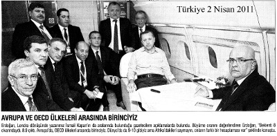
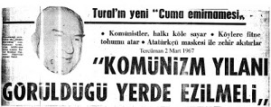
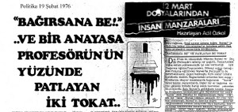

ABD
işbirlikçileri,
ikinci
cumhuriyetçiler, serbest piyasacılar, cemaatçiler küresel medyayı araç olarak kullanıp milyonları zehirliyorlar”
dedim.
Aradan yaklaşık dört ay geçtikten sonra, Kanal 6 TV’den söyleşi daveti aldım.
Tepki verip, “Ben düzen televizyonunda konuşmam”
deyince, Veli Yılmaz, “Talat Abi, daha birkaç ay önce küçük gruplara hitap etmekten şikâyet ediyordun, şimdi küreselleşme yanlısı bir kanal sana konuşma olanağı sunuyor.
Kuşkusuz onlar seni kullanmaya çalışacaklardır. Ama bana göre aklın ve kültürün seni kullanmak isteyenleri bastırır” (7) deyip, TV söyleşisine katılmak için beni ikna etti.
3 Aralık 1992 günü Kanal 6’da çekim yapıldı. Üç gün sonra 6 Aralık günü Ahmet Altan ve Neşe Düzel’le yapmış
olduğum söyleşi yayınlandı. Stüdyodan çıkarken bir adam yanıma geldi. “Siz çok tehlikeli şeyler söylüyorsunuz” dedi .
Ona, “Ben hayatım boyunca gerçekleri söylemeye çalıştım.
Gerçekler size tehlikeli gelmiş olabilir” dedikten sonra kimliğini sorduğumda, Hürriyet gazetesi muhabiri olduğunu açıkladı.
Bana sorulmadan ve izin alınmadan Hürriyet gazetesi muhabirinin stüdyoda ne işi vardı? Kanal “Hürriyet Gazetesi” ne birlikte bana tuzak kurmuştu... Nitekim 4 Aralık günü Hürriyet gazetesinde bana mal edilen saptırma bir haber yayımlandı. (8) O zaman devlet bakanı olan Em. Tuğg. Orhan Kilercioğlu’yla karşı karşıya getirildim. Bu sahte haberi düzeltmek için yasal olarak yapmam gereken her yola başvurdum. 6 Aralık günü söyleşi Kanal 6’da yayınlanmasına karşın 7 Aralık 1992 günü Hürriyet gazetesinin sahte haberi daha da abartıp yayımladı. Tekzibimi bastırmak için mahkemeye gitmekten başka yol kalmadığı için dava açtım, ama davam reddedildi...
Bu davayla “sivil yargı”yı tanıma olanağını buldum.
Emperyalist işbirlikçileri boş durmadılar, belki dünyada ilk kez bir TV yayını hakkında, izlenilmeden, mahkeme tarafından durdurma kararı verildi(!)(9)
Ancak, Kanal 6 yetkilileri, İngiltere’den yayın yaptıkları için mahkemenin durdurma kararını göz ardı edip 6 Aralık’ta söyleşimi yayınladı.
Kanal 6’daki söyleşiyi yönetenlerin bir başka sorusu ise:
“Cuntacı mısınız?” idi. Bu soruyla da tuzağa çekilmek
istenmiştim.
“Cumhurbaşkanı Cevdet Sunay ne kadar cuntacıysa, ben de o kadar cuntacıyım’’ diye yanıt vermiştim.
Hürriyet’in maksatlı haberi üzerine Orhan Kilercioğlu’nun açtığı yıllarca süren ceza ve hukuk davalarında üç kez beraat etmeme karşın yine bazı güçler devreye sokuldu, sonuçta Kilercioğlu’na tazminat ödemeye mahkûm edildim. Yargıtay mahkeme kararını onayladı...
Kanal 6 ile Hürriyet gazetesinin bu derin komplosuna yıllarca direnip Avrupa İnsan Hakları Mahkemesi’nden (AİHM) geri çevirmeyi başardım. Ve de yargıya ders verdim...
Bu olay sonucu bir kez daha sivil yargıyı ve Yargıtay’ı test etmek olanağı buldum...
Almanya’da Demokrasi Paneli (17-19 Eylül 1993) Bonn’da, Gustav Stresemann Institute E.v.’de düzenlenen Türkiye demokrasisinin tartışıldığı bir panele katıldım.
Panelde Prof. Zafer Üskül Alman Tageszeitung gazetesi Türkiye Muhabiri Ömer Erzeren, bir de ben konuk olduk.
Bana verilen konu “Kontrgerilla Cumhuriyeti nedir?” idi. O
günlerde aynı adlı bir kitap yayımlamıştım.(10) 50-60 Alman vatandaşından oluşan katılımcılar genellikle eyaletlerin Türkiye uzmanları ve medya mensuplarından oluşuyordu.
Cumhuriyet gazetesi Almanya muhabiri Dilek Zapçıoğlu bunlar arasındaydı. Köln’de yayımlanan Gündem gazetesi de muhabir göndermişti. Her zaman olduğu gibi ciddi bir hazırlıktan sonra sunum yaptığım için, dinleyicileri
etkilemeyi başarmıştım. Bu arada Türkiye’de insan haklarına ilişkin bir soruya muhatap olduğumda mealen, “Sizler önce evinizin içine bakın, Münih yakınında Oberammergau kasabasında NATO’ya bağlı İstihbarat Okulu’nda tüm NATO
ülkelerinin güvenlik ve emniyet örgütlerine darbecilik, istihbarat, cinayet, sabotaj, psikolojik savaş yöntemleri öğretiliyor” deyince, şaşırdılar. Çünkü Oberammergau’dan haberleri yoktu. Daha sonra da 20 Aralık 1993 günü Oberammergau’ya gidip Pentagon, CIA, SHAPE karargâhı ve NATO’ya bağlı “İstihbarat Okulu”nu görüntüledim.
Bonn’da panele katıldığımda, oradaki hukuk fakültesinden mezun olmuş bir öğrenci yanıma gelip kendisine
“Türkiye’deki anayasal gelişmeler” konulu bir mastır tezi verildiğini, bu konuda yardımcı olmamı istedi. Heyetimizde bir anayasa profesörü bulunduğunu bilmesine karşın benden görüş almakta ısrarlı olmuştu...
Genç kızımıza 1876 yılından 1982 yılına kadar geçen sürede
anayasa
değişiklikleri
hakkında
bildiklerimi
özetledikten sonra bir sürprizle karşılaştım. Yanımızda bizi dikkatle dinleyen bir kişi bana hitaben, “Talat Bey, siz benim doktora tezimi okudunuz mu?” diye sordu. Şaşırmıştım, ilk önce Türkçeyi bu kadar güzel nasıl konuşabildiğini sorduğumda “çocukluğunun babasının görevi nedeniyle Türkiye’de geçtiğini” açıkladı. Eğer doktora tezi yanında ise görmek istediğimi söylediğimde kitabını bana uzatıp devamla, “Siz tezimi kısa bir süre içinde özetlediniz”
dediğinde gururlandım. Doktora tezinde yararlanılan Türkçe kaynaklarını taradım, hepsi kullanılmıştı. Kızımıza, “İyi olacak hastanın doktor ayağına gelir” dedim. Bu arada 1999
yılında yayımladığım bir kitapta, saygıdeğer bilim adamı Dr.
Christian Rumpf’un ülkemizde sık sık anayasa konusunda düzenlenen etkinliklere çağrılmasının bu konuya özgün bir katkıda bulunacağını belirttim. Kimseden ses çıkmadı. (11) Derin Devlet, Gözaltı Süresini Uzatmaya Çalışıyor Cezaevinden çıktıktan sonra elime geçen “Marmara Brifingi” adlı resmi belgeyi bir yayınevine verip yayınlanmasını istedim. Önsözünü de ben yazdım. Kitabın tanıtılması için basın toplantısı yaptım. Başkanlığını Org.
Turgut Sunalp’in yaptığı “o günün derin devleti”ni oluşturan yasallığı olmayan bir heyet “gözaltı süresi”nin uzatılmasını öneriyor, bir süre sonrada Anayasa bu doğrultuda değiştiriliyordu.(12)
Böyle bir durumda 1971 sonrası yapılan Anayasa Değişikliklerinin yasallığından söz edilebilir mi? Bir ay süreyle işkence görmüş bir kişi olduğum için, bir ülkenin Anayasa’sında yer alan “gözaltı süresinin kısalığını ya da uzunluğunu” o ülkenin demokrasisinin niteliği hakkında bir ölçüt oluşturacağını yaşamımla biliyorum.(13) Adı 12 Mart 1971 darbesi sonrası Ziverbey Zihnipaşa Köşkü’ndeki işkencecileriyle birlikte anılan Em. Org. Turgut Sunalp, 12 Eylül darbesi sonrası Ayaklanmaları Bastırma Hareketi adlı CIA kaynaklı bir yayınevi tarafından basılan Genel Kurmay Başkanlığı’nca tercüme edilen bir kitapta(14) önerilen doğrultuda “demokrasicilik oyunu”na geçildiğinde Parti Başkanlığı’na soyundu. Bu amaçla Ankara’da bir mafya babasının evinde parti kurma çalışmalarını sürdürdü. Ancak ABD’nin yeğlemesi Turgut Özal’dan yana olduğu için Turgut Sunalp başbakan olamadı. Anayasa konusundaki bu
umursamazlık, sözde demokrasiye geçildiği iddia edilen bir dönemde, İktidardaki bir kişi, “Bir kere de Anayasa’yı ben çiğnesem ne olur” diyebildi. Bu söyleme karşın Anayasa’yı savunmakla yükümlü kurumlardan hiç ses çıkmadı.
Günü kurtarmak ve uzun erimli hedeflerine ulaşmak için, ABD emperyalistlerinin önerileri doğrultusunda düzen değiştirmeye kalkanlara İngiltere’de anayasa yerine geçen Magna Carta’nın 1215 yılından beri yürürlülükte olduğunu anımsatmak isterim. Magna Carta’ya karşın İngiliz kralının keyfi uygulamalarının karşısında dört yüz yıl süren başkaldırı sonucu 1679 yılında Habeas Corpus Act kabul edilip tutuklama, yargılama ve kişi özgürlükleri kurala bağlanmıştır.
1215 yılında İngiltere’de yürürlüğe giren Magna Carta’dan 746 yıl sonra, 1679’da kabul edilen Habeas Corpus Act’an 282 yıl sonra 1961 yılında kabul edilen Anayasa’ya “kişi hak ve özgürlükleri”ne yer verilmiştir.(15) Günümüzdeki uygulamalar İngiltere’den 796 ve 332 yıl geridedir. Bu anlayış yapılması düşünülen 2011 Anayasası’yla kalıcı hale getirilmek istenilmektedir. Bu gidişe dur denilmelidir.
Osmanlı’dan günümüze kadar Gülhane Hattı Hümayun’unun (1839) kabulünden ferman ve anayasalar da vatandaşlara verilen hak ve özgürlüklerin bile geriye giden bir anlayışın iktidara egemen olduğu görülüyor.(16) “Çağdaş uygarlık”
hedefine toplum “ileri vites”e takılarak ulaştırılabilir.
Toplumu “geri vites”e takmak isteyenlerin sonu hüsran ve karanlıktır.
Anayasa maddelerini karşılaştırırken bu değişimin nedenini de algılamaya çalıştım. Tüm kuramsal ve deneysel çabalarımın sonunda vardığım sonuca göre, anayasalarımız üç bölümden oluşmaktadır. Bir bölümünde anayasanın kabul
tarihinden önceki döneme tepkiyi içeren maddeler yer alırken, diğer bölümünde uluslararası geçerliliği olan belgelere konulan imza gereğince yükümlü olduğumuz maddeleri içermektedir. Bir bölümü ise demokratik ülkelerin anayasalarından alınan maddeler “yeni Anayasa”ya aktarılmaktadır.
Ancak yaşamlarını emperyalistlerle işbirliğinde gören iktidarların özlemlerinin Anayasa’ya aktarılıp ülkemizi karanlığa itme ve “ulus devlet”i ortadan kaldırma dayatması
“yeni Anayasa”ya konulup Cumhuriyet kazanımlarının ortadan kaldırılması niyeti açıkça görülmektedir.
Gerçekte 1961 yılından günümüze kadar anayasa değişmelerini izlemiştim. Özellikle, 1961 Anayasası ve 1971
darbesi sonrasında yapılan üç aşamalı 53 maddelik anayasa değişikliklerini 1972-74 yılları arasında kaldığım Selimiye Tutukevi’nde karşılaştırıp bazı yargılara varmıştım.
12 Haziran 2011 seçimlerinden sonra Anayasa’nın tümden değiştirme özlemi ardında emperyalist öneriler doğrultusunda laiklikten “güdümlü İslam”a dönüştürüleceğini, laik-antilaik çelişkisinin
karşıdevrimin
özlemleri
doğrultusunda
düzenleneceğini, Türk Silahlı Kuvvetleri’nin Milli Savunma Bakanlığı’na bağlanacağını, yargı ve yüksek yargının okyanus ötesinden gelen öneriler doğrultusunda şekillenip Osmanlılık özleminin yolunu açacağını, emekçi ve emeklilerin haklarının budanacağını,
sendikaların
etkisizleştirilmesi,
basın
özgürlüğünün sınırlandırılması vb. için çaba gösterileceğini anlamak için kâhin olmak gerekmez...
Yaşamımla biliyorum ki Anayasa değiştirmekle bir yere varılamıyor. Önemli olan halkımızın kültür seviyesinin
yükseltilmesidir diye düşünüyorum. Bazı TV kanallarının halkımıza yönelttiği sorulara verilen yanıtlar, kanımca, bir yandan “milli eğitim politikası”nın iflas ettiğini gösterirken diğer yandan gerek TRT ve gerekse özel TV kanallarının ve de yazılı medyanın görevleri arasında bulunması gereken kültür hizmetini yerine getirmedikleri anlaşılıyor. Demek ki propaganda ve paparazilik yapmaktan kültüre sıra gelmiyor...
1982 Anayasası mutlak değiştirilmelidir. Ama iktidarın anlayışına
göre
değil.
Atatürk’ün
“antiemperyalist,
antikapitalist ve tam bağımsızlık” ilkeleri doğrultusunda...
Kaynakça ve Açıklamalar (1) Anadolu İhtilali, 2 cilt, Mahmut Esat Bozkurt, Kaynak Yayınlar, Nisan 2003.
(2) 1’de a.g.y.
(3) “Orgeneral Cemal Tural’a Açık Mektup”, Selçuk Atakan-Talat Turhan, Akşam, 6 Aralık 1965.
(4) “Kontrgerilla Cumhurbaşkanlarına da Görev Yükler”, Nokta 13-19 Aralık 1992.
(5) “Anayasa ve Demokrasi Paneli”, Çanakkale, 9 Ağustos 1992, katılımcılar: Muzaffer Erdost, Ercan Kanar, Veli Yılmaz.
(6) “Anayasa ve Demokrasi Paneli”, Ören 16 Ağustos 1992, Katılımcılar: Doç. Dr. Semih Gemalmaz, Veli Yılmaz.
(7) “12 Mart Cuntaları ve Kontrgerilla”, Kanal 6, “Bizim Koltuk” programı, Ahmet Altan-Neşe Düzel’le söyleşi.
(8) “Talat Turhan Kontrgerillayı Anlattı”, Hürriyet 4 Aralık 1992.
(9) a- “‘Bizim Koltuk’ta Müthiş İddia”, Yalçın Doğan, Milliyet 6 Aralık 1992
“İkinci Cumhuriyet, Kontrgerilla ve Demokrasi”, Mehmet Altan, Sabah, 6 Aralık 1992.
(10) Kontrgerilla Cumhuriyeti, Talat Turhan, Tümzamanlar Yayıncılık, 1993.
(11) Çeteleşme, Talat Turhan, Tümzamanlar Yayıncılık, 1999.
(12) Marmara Brifingi/Devletin Gözüyle Sol ve Sağ
Örgütler, Kaynak Yayınları, 1995 (Talat Turhan’ın önsözüyle).
(13) Bomba Davası/Savunma, Talat Turhan İleri Yayınları, 2006.
(14) Ayaklanmaları Bastırma Hareketi, David Galula, çev.
Hasan Lembet, Genelkurmay Basımevi, 1965.
(15) 1961 Anayasası, Doç. Dr. Orhan Aldıkaçtı 164.
(16) Türk Anayasa Metinleri, Dr. A. Şeref Gözübüyük-Dr.
Suna Kili, Ankara, 1957.
Bir ABD talimnamesi cumhurbaşkanlarına görev veriyor
“Kontrgerilla Cumhurbaşkanlarına da Görev Yükler”
Nokta dergisi, 13–19 Aralık 1992
Yeni Anayasa - İleri Demokrasi
Geriye Dönüş - Bölünme - Teslimiyet 2011
İktidarın geçmişe dönüş özlemleri dokuz yıllık süreçte ivme kazandı. Uluslararası gelişmeler ve cemaat desteği, dışarıda önerilen “ılımlı İslam” modeline göre(1) yıllardan beri sürdürülen kadrolaşma ve cemaatleşme sonucu kademe kademe güvenlik güçleri, bürokrasi, yargı ve üniversitelerin teslim alınması iktidarın elini güçlendirdi. “Kemalizm” ve
“Atatürk Devrimleri”ne yönelik karşıdevrim süreci sürüyor.
Bu sürece, yandaş medya ve akademisyenler propaganda desteğiyle katkıda bulunuyor.
Buna karşılık, iç ve dışta sorunlar çığ gibi büyüyor, ekonomi ve işsizliğin alarm sinyalleri verdiği bir dönemde, seçim propagandası kutuplaşmayı daha da artırıyor, ülkemiz bölünmenin eşiğine getiriliyor.
Politik liderlerin karizması üzerinden sürdürülen, ülke sorunlarından uzak, popülist politikaları onaylamak zorunda bırakılan halkımız, parti yerine lider seçme eğiliminde görülüyor.
Bu eğilimin karşıdevrimcilerinin gücünü artırmasından endişe duyuyorum.
İktidar, “Osmanlı özlemi”ne kadar(2) geriye giden karşıdevrimci hedeflerine ulaşmak için girişimlerini inatla sürdürüyor. 12’den 12’ye adeta bir rövanşı simgeliyor. İktidar,
12 Eylül 2010 referandumu sonucunda yapılan Anayasa ve yasa değişikliğiyle yargı üzerindeki etkisini artırdı.
Silahlı Kuvvetler’i etkisizleştirme amacıyla yürütülen operasyonların önünü açan yasa değişikliği yapılırken dönemin genelkurmay başkanı, bir suikast senaryosu üzerine düzenlenen, “kozmik oda” aramasına demokrasi adına göz yumdu...
Askerin sivil yargıda yargılanması yasalaştı. İrticadan nemalananların, irtica ve bölücülükle mücadele edenlerle hesaplaşması somutlaştı... 12 Haziran 2011 seçimleri iktidarı daha da güçlendirirse belki de 12 Eylül 2011’de yapılacak
“yeni Anayasa” referandumuyla 1923’te kurulan “Atatürk Cumhuriyeti”nin tabutuna çivi çakılıp(3) 2023’te, “ileri demokrasi”ye doğru yol alınacak!..
Demokratik görünümlü bu karanlık niyetin, cemaat ve ardındaki güçlerden destek alan hıyanetin tezgâhlanabilmesi için
— Anayasa’nın değiştirilemez maddelerinin değiştirilmesi;
— Başkanlık sistemine geçilmesi;
— Genelkurmay Başkanlığı’nın MSB’ye bağlanması;
— Yargının tam denetim altına alınması gerekiyor.
Anayasa’nın yürütmeyi güçlendirme amacı doğrultusunda değiştirilmesi bazı otorite düşkünlerinin saplantılarını tatmin edebilir ama kurumlar arası çatışmaları daha da artırıp kaotik bir ortam doğurabilir. Bu ortam halkımızı ve ülkemizi felakete sürükleyebilir.
Yaşamı boyunca hiçbir partiye üye olmamış, kişisel çıkar gütmemiş ve tüm hayatını ülkenin esenliği yolunda çaba harcamakla geçirmiş, bu uğurda diyet ödemiş 87 yaşında bir kişi olarak bu karanlık gidişin sonunun felaket olacağını düşünüyorum.
ABD ve AB, “ulus devlet”leri ortadan kaldırmayı çıkarlarına uygun görüyor. İslam coğrafyasında yer alan ülkelerde işgal sonrası egemenliğini sürdürebilmek için, İslam’ı yeniden şekillendirip “ılımlı İslam” anlayışını egemen kılmak için milyarlarca dolar sarf ediyorlar.
Ümmetçi ve şeriatçı anlayışın “milliyetçilik” karşıtlığı emperyalistlerin hedefleriyle örtüşüyor.
İşbirlikçi sermaye, emperyalizmle göbekten bağlı olduğu için, iktidar, cemaat ve İslami sermaye, çıkarlarını emperyalistlerle bütünleşmekte görüyorlar.
“Yeni
Anayasa”
ve
“ileri
demokrasi”nin,
küreselleşmecilerin
amaçlarına
hizmet
etmek
için
şekilleneceği görülüyor...
“Yeni Anayasa” hazırlamak TBMM’ye ait bir görev olmasına karşın, bazı çevrelerin küresel dayatmalar ve iktidarların özlemleri doğrultusunda “Anayasa çalışması”
başlatıp ortam hazırlamasına öncülük ettiği görülüyor:
— TÜSİAD
— TESEV
— Abant toplantısı vb. gibi.
Gerçekte üniversitelerimizde bu konuda akademik çalışma yapılması gerekirken böyle bir çalışma görülmüyor. Buna karşılık bazı anayasa profesörlerinin yukarıda belirttiğim kuruluşlarla birlikte çalıştıklarını biliyoruz.
Geçen yıl yoğunlaşan Anayasa çalışmaları bu yıl da Başbakan R. T. Erdoğan’ın özlemleri doğrultusunda sürerken tepkilerini de beraberinde getiriyor.
Sürece AKP milletvekili Prof. Burhan Kuzu “Her yönüyle Başkanlık Sistemi” adlı kitabıyla katıldı. Kuzu kitabında
“kongre hükümeti” diye adlandırdığı bir başkanlık sistemi öneriyor ve bu modelde “Eyalet sistemi ve tam başkanlık uygulaması vardır...” diye önerdiği sistemi açıklıyordu.(4) Başbakan Erdoğan, Londra ziyaretinde kendisine sorulan,
“Başkanlık sistemini destekliyor musunuz?” sorusuna “...
seçim sonrasında konuşulabilecek şeyler” yanıtını vermiş
olmasına karşın bu konuda bir TV kanalında ayrıntılı açıklamalarda bulunmuştu.(5)
Başbakanın iktidarı şekillendirme gayreti Wikileaks Belgelerinde görüldüğü gibi A. Gül-T. Erdoğan rekabetini ortaya çıkardı. Bu konuda AKP’nin ağır topları da “Başkanlık Sistemi”ne karşı tavır aldılar.(6)
Başbakan Erdoğan’ın “başkanlık sistemi” özlemine ilk tepki Altan kardeşlerden geldi.
Ahmet Altan makalesinde:(7)
“... nihayet baklayı ağzından çıkardı ..... seçimlerden sonra
‘başkanlık referandumuna’ gidebileceğini söyledi.”
“... Başkanlık referandumu karşımıza,
— PKK’ya af
— Ergenekon’a af
— Bedelli askerlik
— Yeni Anayasa
— Türbana kamusal özgürlük
— Alevilere cemevi gibi toplumun bütün kesimlerinin ilgisini çekecek vaatleri içine doldurduğu bir torbayla çıkacak. Ben başkanlık sisteminin Türkiye için değil dünyadaki bütün ülkeler için çok tehlikeli olduğuna inanıyorum...”
Prof. Dr. Mehmet Altan ise bir TV kanalında yaptığı açıklamada başkanlık sistemini eleştirdi(8) (mealen):
— Demokrasiye katkıda bulunmaz;
— Deprem yaratabilir.
Prof. Dr. Ersin Kalaycıoğlu bir gazetede yayımlanan söyleşide: (9)
“AKP’nin 2007 seçim beyannamesini çok makul bulmuştum ve desteklemiştim. Şimdi büyük hayal kırıklığı içindeyim.”
“2011 seçim beyannamesi gösteriyor ki, Erdoğan uzlaşı vurgusu olmayan bir Anayasa yapmaya yöneliyor. Nasıl ki 1982 Anayasası General Kenan Evren için hazırlandı, 2012
Anayasası R. T. Erdoğan için hazırlanacak.”
“Erdoğan bundan sonra ülkeyi referandumla yönetecek.
Referandumla demokrasinin hiç ilgisi yoktur... Meclis’te beceremediğinizi halka gidip yaptırmak otoriter rejim mantığıdır, demokrasi değildir.”
Prof. Dr. Ergun Özbudun başkanlığında AKP’ye Anayasa taslağını hazırlayan ekipte yer alan YÖK yürütme kurulu üyesi, Selçuk Üniversitesi öğretim üyesi Prof. Dr. Yavuz Atar’ın, bir gazetede yaptığı söyleşi daha da ilginçti:(10)
“Erdoğan, cumhurbaşkanı olup ve kendine sadık birini başbakanlığa getirip, bir de ‘Meclisi kayıtsız feshetme yetkisi’
gibi birkaç maddelik anayasa değişikliği yapıp, Fransız tipi yarı başkanlığı getirebilir.”
“... Halk tarafından seçilecek bir cumhurbaşkanıyla klasik parlamentarizmin yürütülmesi mümkün değil.”
“Halkımız Osmanlı’dan gelen bir geleneğin, bir kültürün sonucunda, tek adam yönetimini, karizmatik lideri sever.”
ABD Büyükelçilik yazışmalarında her ne kadar taraflarca kabul edilmese bile Gül - Erdoğan rekabeti sürüyor. Ancak Prof. Yavuz Atar’a göre:(11)
“2012’nin temmuz ya da ağustos ayında halk cumhurbaşkanını seçecek. Eğer Erdoğan bugünkü sistemde cumhurbaşkanı olursa, Başbakan olarak sahip olduğu yetki ve sorumluluklar elinden gidecek ve sisteme egemen olamayacak...”
Özetle ikili arasındaki rekabetin, dış etmenlerinde etkisiyle kızışacağını, 2012 yazının iyiden iyiye ısınacağını öngörebiliriz...
Her türlü sürpriz ve gelişmeye açık, haziran-ağustos aylarındaki iktidar kavgasında “son gülen, iyi gülecek”... (12) TESEV ve TÜSİAD’ın tüm etkinliklerini gerçekçi bir gözlemle değerlendirebilmenin kişisel ve örgütsel bazda beslendiği kaynakları saptamanın yaşamsal önemi olduğunu düşünüyorum.
Eğer bu örgütlerin arasında mason, mason üstü ve premasonik örgüt üyeleri varsa Siyonizm’e hizmet edeceklerdir.
Eğer cemaatlerle ilişkileri varsa onların sözcülüğünü yapacaklardır.
Eğer çokuluslu şirketlerle birlikte çalışıyorlarsa “küresel sermaye”nin çıkarlarına hizmet etmek gibi bir mecburiyetleri olacaktır.
Bu nedenle hangi vakfın, derneğin ya da üyelerinin hangi dış desteklerle fonlandığını bilmemiz gerekiyor. Bu bilgiler ülkemizin ne tür ilişkiler ağı içinde dış güdüme açıldığını gösterebilir.
Örneğin TÜSİAD (Türkiye Sanayicileri ve İşadamları Derneği) açılımından da anlaşılacağı gibi dernek statüsündedir. Ancak günümüzde Avrupa fonlarının beslediği dernekler “Sivil Toplum Kuruluşları” (STK) olarak tanımlanıyor ve de demokratikleşme açısından siyasi partilerle bir tutuluyorlar.
AB, STK dışında da başta öğrenciler, öğretim görevlileri, belediyeler de dahil olmak üzere proje üreten (!) her kesimi
besliyor.
Ülkemizi
kendi
değer
yargılarına
göre
şekillendiriyor.
İktidarların yapamadığını AB yapıyor. Özellikle Doğu ve Güneydoğu Anadolu’daki belediyeleri destekliyor. Aynı kaynaklardan beslenen “seçilmiş işadamları”nın “Kürt sorunu”na eğilmelerinin samimiyetine inansam onları takdir ederim. Ancak “parayı veren düdüğü çalar örneği” angaje edilenlerin özgür iradelerine göre davranması olanaksızdır.(13) Bu tür kuruluşların dışarıdan aldıkları paranın bir kısmını akademisyenlere aktarıp ısmarlama “Anayasa Taslağı”
hazırlatmalarının
ardındaki
gerçeği
anlamadan,
propagandanın da etkisiyle yönlendirilenler yanıldıklarını anladıklarında iş işten geçmiş olabilir.
TESEV Anayasa Çalışması (Yorumsuz) (14)
“Yeni Anayasa’nın iktidarın kaynağının sadece halk olduğunu kesin bir dille belirtmesi gerekir.”
“Vicdani ret temel bir hak olarak yeni Anayasa’da yer almalıdır.”
“Anayasa hiçbir şekilde etnik kimliklere referans yapmamalı, ancak tüm kültürel farklılıklara ve hayat tarzlarına saygıyı temel ilke olarak belirlemelidir.”
“Türkçenin resmi dil olarak muhafaza edilmesi gerekir.
Ancak, anadili Türkçe olmayan Türkiye Cumhuriyeti vatandaşlarının kamu hizmetlerinden yararlanmasında kendilerine uygun kolaylıklar sağlanacağının da Anayasa’da kayıt altına alınması gerekir.”
“Zorunlu din derslerinin kaldırılması gerekmektedir.”
“Diyanet İşleri Başkanlığı’nın sunduğu din hizmetlerinden yararlanmayan mezhep ve dinlere bağlı cemaatler ile muhtelif inanç gruplarının örgütlenmeleri durumunda, devlet bunları kamu tüzelkişiliği olarak tanımalı. Cami ve mescitlere sağlanan kolaylıklar cemevlerine de tanınmalı. Diyanet’e bağlı ibadethanelere tanınan imtiyazlar, Müslüman ve Müslüman olmayan gruplara da tanınmalı.”
“Yürütme yetkilerinin cumhurbaşkanı ile Bakanlar Kurulu arasında paylaşıldığı, yürütmeye ait asıl yetkilerin Bakanlar Kurulu’na tanındığı, cumhurbaşkanının yetkilerinin ise sembolik konularla sınırlandığı klasik parlamentarizmin Türkiye için en uygun tercih olduğunu düşünmekteyiz.”
“Siyasi partilerin kapatma nedenleri; şiddete başvurma, şiddet çağrısında bulunma, kin ve nefreti teşvik etmeyle sınırlanmalı.”
“Genelkurmay başkanına bağlı atamaların Bakanlar Kurulu tarafından yapılması gerekir.”
TÜSİAD’ın Gücü Nereden Geliyor?
İsminden de anlaşılacağı üzere TÜSİAD sanayici ve işadamlarının sorunlarını halletmek amacıyla kurulmuş bir dernek olmasına rağmen küresel ilişkiler ağı gelişip “serbest piyasa ekonomisi” öne çıktıkça, dernek iktidarı yönetmeye kalkınca sürtüşmeler yaşandı. Gazete ilanlarıyla iktidarları düşürmeye kalktılar. Günümüzde de “bertaraf olmak”
polemiğinden sonra tarafların anlaştığı bir evrede Başbakan Yardımcısı Bülent Arınç ile TÜSİAD Başkanı Ümit Boyner
arasında “internet yasakları” konusunda “sert tartışma”
başladı.(15) Bu tartışma sürebilir.
TÜSİAD’ın 1996 yılında Henry Kissinger’ı konferans için ülkemize çağırmış olması beni çok tedirgin ettiği için 20 gün yoğun bir çalışma yapıp “Henry Kissinger’ın içyüzü” konulu bir “basın toplantısı” düzenledim.(16)
Henry Kissinger’ın “küreselleşmenin lideri” David Rockefeller’in sağ kolu olduğunu biliyordum. Bu ideolojik birlik Kissinger’ı “ABD derin devleti”nin en etkili konumuna getirdiği için, XX. yüzyılda ABD politikasını Siyonizm’e katkıda bulunacak şekilde yönetmeyi başarmış, mazlum uluslara yönelik ABD saldırganlığının öncülüğünü yapmıştır.
Böyle bir kişinin ülkemizi yöneten liderlerle dostluk ilişkisi içinde bulunmasından kuşkulandığım için Kissinger’ı hep izledim.
Kissinger, “ABD derin devleti”ni oluşturan CFR, BB ve TC
örgütlerinin üyesi olmanın yanında dünyayı yöneten çekirdek kadro içinde yer almaktadır. Bunun yanında “Bilderberg örgütü”nün de lideridir.
Bilderberg üye listelerine baktığımızda TÜSİAD üyelerinin çoğunun bu örgüte üye olduğunu görürüz. TÜSİAD
üyelerinin büyük bir çoğunluğunun da premasonik örgütlere üye olduğu düşünülürse bu derneğin faaliyetlerine daha doğru teşhis konulabilir.
“Zenginler kulübü” diye de tanımlanan TÜSİAD’ın gerek örgüt ve gerekse STK olarak Avrupa fonlarından beslendiğini görüyoruz.
Bu örgütler ve üyelerin isim listelerini ortaya döktüğünüzde
“küresel işbirliği” ağını saptayabilir, TV kanallarına her programa
aynı
kişilerin
çıkarılmasının
nedenlerini
bulabilirsiniz.
Daha da önemlisi birbirinden ayrı saflarda görünen kişilerin beslendikleri kaynağın sözcülüğünü yapmakta birbirleriyle yarıştıklarını görünce şaşıracaksınız.(17) Küresel hıyanet cephesi efendilerine hizmet etmek için birbiriyle yarıştıkça ülkemiz karanlık bir geleceğe doğru yol alıyor.
TÜSİAD’ın Anayasa Çalışması
12 Eylül referandumu öncesi iktidar TÜSİAD’ı kendi yanında göremediği için sert bir üslupla eleştirmiş, buna Ümit Boyner’den yanıt gelince iktidar-TÜSİAD ilişkileri gerilmişti.
(18)
Referandumdan hemen sonra TÜSİAD, Anayasa konusunda görüşlerini şöyle açıklamıştı:(19)
“Hedef bir arada, özgürce irademizin ifadesi ve gerçek bir toplum sözleşmesi niteliğinde hazırlanacak bir XXI. yüzyıl Anayasa’sı olmalıdır.”
“Bölenlerden ilki din ve vicdan özgürlüğüdür. Devlet tüm din ve mezheplere tam anlamıyla eşit mesafede duracak mıdır?”
“İkinci bölen kimlikler meselesidir. Hepimiz, Türk, Kürt veya herhangi bir etnik köken tanımlamasının ötesinde ‘eşit vatandaş’ olma noktasında anlaşacak mıyız?”
“Üçüncü bölen ise kuvvetler, yani yasama, yürütme ve yargı erklerinin ayrılığı ve hiçbir vesayet altında olmadan etkili çalışabilmeleridir. Yasama, yürütme ve yargının aralarındaki ilişkilerde doğru kontrol/denge mekanizmalarının nasıl oluşturulacağı, yargının tarafsızlık ve bağımsızlığının nasıl korunacağı, vatandaşın hür iradesinin siyasi partilerde ve Meclis’te en yüksek şekilde nasıl temsil edileceği konusunda anlaşacak mıyız?”
Gerçekte liberal ekonomik politikaları savunan bir iktidar ile liberalizmden, özellikle de özelleşmelerden palazlanan bir kuruluşun ters düşmesi olağan sayılmazdı. Sonuçta bir yerde buluşmaları gerekiyordu.
Başbakan Erdoğan’ın, TÜSİAD’ın 41’inci genel kurul toplantısına gidip konuşma yapmasıyla gergin ortam yumuşadı.(20)
TÜSİAD’ın görevlendirdiği 22 Akademisyen ve kanaat önderi, 5 aylık bir çalışma sonucunda hazırladığı önerileri Yeni Anayasa Yuvarlak Masa Toplantıları Dizisi: Yeni Anayasa’nın beş temel boyutu adlı bir kitapta yayınladı. Her ne kadar kitap TÜSİAD imzası taşımasa da, örgütün “3
böleni, 3 birleştiren haline getirme” direktifine(21) uygun hazırlandığı açıkça görülüyor.(22)
Bu konuda yazılan bir makaleden:
“Tarihi bağlamda demokratikleşme süreci, üç ana meseleyle karşı karşıya kalmıştır. Katılımcı ve uzlaşmacı bir süreçle hazırlanacak, XXI. yüzyıla yakışır yeni Anayasa ... 3
böleni, 3 birleştiren haline getirmeye hizmet etmelidir.”
— Din ve vicdan özgürlüğü;
— Kimlikler;
— Kuvvetler ayrılığı
Küresel sermayenin isteklerini bir ön çalışmayla topluma yansıtma görevini üstlenen TÜSİAD’ın hazırlattığı kitaptaki öneriler, iktidarın da niyetiyle örtüşüyordu. Anayasa’nın değişmez
maddeleri
(Cumhuriyet
hariç)
tümüyle
değiştirilmek isteniyordu.
Peki, bu raporu kimler hazırladı? Birkaç örnek vermek gerekirse:(23)
— Prof. Dr. Ergun Özbudun
— Prof. Dr. Turhan Tarhanlı (Türkiye İnsan Hakları Vakfı üyesi; Helsinki Yurttaşlar Derneği kurucu üyesi)
— İlter Türkmen
— İvo Molinas
— Ümit Fırat (Helsinki Yurttaşlar Derneği Kurucu Üyesi)
— Fikret Toksöz (TESEV) isimlerinin öne çıktığını görüyoruz. Bu kişilerden özellikle akademisyen olanların AKP, TESEV ve Abant toplantılarında yer aldığı da biliniyor.
Bu bilgilere ilaveten TÜSİAD üyelerinin CFR, Bilderberg, Rotary üyelikleri dışında; Avrupa Birliği fonlarından beslenen Vakıf ve Dernek üyeliklerinden bazı örnekler vermek istiyorum:(24)
Erkut Yucaoğlu (Bilderberg üyesi, Boğaziçi Üniversitesi Vakfı üyesi)
Jack Kamhi (Bilderberg üyesi, Boğaziçi Üniversitesi Vakfı üyesi, 500’üncü Yıl Vakfı üyesi)
İshak Alaton (TESEV, Kadın Emeğini Değerlendirme Vakfı üyesi)
Ümit Boyner (Kadın Girişimcileri Derneği Yönetim Kurulu üyesi)
Cem Boyner (Bilderberg örgütü üyesi [1995], Genç Küresel Lider “Young Global Leaders” [1995])
31 Aralık 2002’de Ümit Boyner’inde içinde bulunduğu TÜSİAD üyesi “Avrupa Üzerine Radyo Programı ve İnternet Sitesi” E-MAG projesi için AB’den 53.617 euro aldı.
Selahattin
Demirtaş,
Sezgin
Tanrıkulu,
Osman
Baydemir’inde bu tür derneklerde üyelikleri bulunuyor.
Avrupa Birliğinin bol keseden dağıttığı paralar saymakla bitmiyor.
Üniversiteler, Akademisyenler, Belediyeler ve hatta Başbakanlık İnsan Hakları Başkanlığı AB’den fonlanmış.(25) Araştırmacı yazar Yılmaz Dikbaş kitabında: “Kim kime karşılıksız para verir?” sorusuna yanıt verip bu kirli “sivil örümceğin ağı”nın içyüzünü açıklıyor.(26)
TÜSİAD’ın hazırlattığı “Anayasa Çalışması” TÜSİAD’ın 40’ıncı yıl dönümüne denk getirildi. TÜSİAD Başkanı Ümit Boyner, “Tabu ve korkuların üzerine gidilmesi gerektiğini”
söyledi ve eşi Cem Boyner’in olası eleştirileri kastederek sorduğu “Dik duracak mısınız?” sorusunu da “Dik duracağız”
diye yanıtladı. (27) Bir TV kanalında yaptığı söyleşide ise 12
Eylül
referandumundan
sonra
22
akademisyeni
görevlendirdiklerini “beş ana başlıkta fikir talep ettiklerini”
açıkladı.
Sipariş üzerine akademisyenler ve kanaat önderleri profesyonel (!) bir çalışma sonucu sipariş edilen “Anayasa Çalışması”nı yapıp beş ana konuda fikir ürettiler:(28)
“Cumhuriyet dışında değiştirilemez madde olmayacak...”
“Bölgeler kendi eğitim sistemini ortaya çıkarabilecek...”
“Atatürkçülüğe ideolojik anlam yüklenmeyecek...”
“Türk milleti veya milliyetçiliğe atıf yapan ifadeler Anayasa’da yer alacak...”
“Vatandaşlığın tanımlanmasında Türklük kavramına yer verilmeyecek...”
Özetle... Cumhuriyet’in içi boşaltılacak... Laikliğin akıbeti meçhul... “Türk” sıfatı tarihe gömülecek... Uzun dönemde de herhalde “Türklerin Ülkesi” anlamına geldiğinden “Türkiye”
sözcüğü kaldırılacak...”
TÜSİAD’ın tezlerini savunmak için düzenlediği forumu, Nuri Çolakoğlu yönetti.(29) Katılımcılar arasında şu isimler yer aldı:
— Narcis Serra (İspanya başbakan yardımcısı ve savunma bakanı)
— Brian Currin (ETA ve IRA’yı savunan avukat)
— Cem Boyner
— Prof. Murat Belge (Helsinki Yurttaşlar Derneği üyesi)(30)
—Prof. Ahmet İnsel
—Prof. Mithat Sancar (Türkiye İnsan Hakları Vakfı üyesi) (31)
—Prof. Ahmet Kabaoğlu
TÜSİAD’ın forumuna katılan özellikle yabancı kişilerin, Anayasa çalışmalarında yer alan görüşleri kuvvetlendirmek amacıyla seçildiği özenle görülüyor. Örneğin Narcis Serra’nın Genelkurmay Başkanlığı’nın MSB’ye bağlanması önerisini güçlendirmek için seçilmiş olduğu görülüyor.
Bunun gibi ETA ve IRA örgütünün Avukatlığını yapmış
olan Brian Currin’de Kürt sorununa ilişkin maddelere haklılık kazandırmak için seçilmiş bir konu mankeni olduğu kesinlikle anlaşılıyor.
Örneğin Cem Boyner’in “Devletin, terör örgütüyle görüşürken yasal partiyle görüşmediği örnek var mı?”
sorusuna B. Currin, “Çok olağandışı bir durum. Ben daha önce hiç karşılaşmadım” diye yanıt veriyordu.(32) Doğrusu bir yandan para kazanırken diğer yandan ülke sorunlarına bu ölçüde ilgi duyan Boyner çiftini kutlamak gerekir.
Kürt sorununa insani yönden yaklaşan her anlayışa saygı duyarız.(33)
Ancak Cem Boyner ile Kürt sorunu arasındaki ilişkinin ardına baktığımızda gerek TÜSİAD’ın ve gerekse Diyarbakır Belediyesi başta olmak üzere bazı Kürt aydınlarının Avrupa fonlarından beslendiklerini gördüğümüzde çıkar ilişkilerinin başat rol oynadığını söyleyebiliriz.(34)
Bu durumda Kürt sorununa yaklaşımın samimiyetinden kuşku duymamız doğaldır.
Cem Boyner görev bilincini daha da ileri boyutlara taşıyıp (!), “Türkiye’deki insanların özgürlüğü, onur ve hakları; ülkenin bölünmesinden, devletten daha önemlidir” diyerek niyetini belli etmiştir.
Cem Boyner’in bu açıklamasından sonra ona yönelik eleştiriler yoğunlaştı.(35)
Buna karşılık Abdullah Öcalan’dan “TÜSİAD çalışmasına destek” geldi.(36)
“TÜSİAD’ın
önerileri
söylediklerimle
örtüşüyor.
Demokratik Anayasa’yı biz de ileri sürmüştük. Ulus ve vatandaşlık tanımının bir etnisiteye bağlı olmadan yapılması gerektiğini belirtmiştik. Özgürlükler de ülkesel bütünlük de önemlidir. İkisi birbirine karşıt şeyler değil.”
Ümit ve Cem Boyner’in tüm “dik durma” (!) çabalarına karşın dört gün önceki TÜSİAD açıklamasının tam karşıtı bir geri dönüşle TÜSİAD hazırlattığı “Anayasa Çalışması”na sahip çıkmaktan vazgeçti. “22 akademisyen ve kanaat önderini (!)” iyot gibi açıkta bıraktı.
Kuşkusuz TÜSİAD’ı “çark etmeye” zorlayan nedenler vardı. Sorunun daha ilginç boyutu beş ay para alıp,
“ısmarlama anayasa taslağı” hazırlayan 22 kişiden hiç ses çıkmaması idi...
TÜSİAD açıklamasında,(37) “Cumhuriyet’in demokratik, laik, sosyal bir hukuk devleti olması niteliklerini ve devletin dili, başkenti ve bayrağı konularını içeren Anayasa’nın değiştirilemez maddelerinin değiştirilmesi yönünde, ne geçmişte ne bugün, bir görüş ve önerimiz olmamıştır” denildi.
TÜSİAD’ın kendisine yakıştırılmayan bu tavrı eleştiri konusu oldu:(38)
“İmralı TÜSİAD’ı karıştırdı - Türkiye’de alanlarında uzman akademisyenlere hazırlatılan Anayasa için ‘Bizim görüşümüz değil’ diyen TÜSİAD’ı, Abdullah Öcalan’ın destek açıklaması korkuttu.”
1984 yılından bu yana çatışmaya dönüştürülen “Kürt sorunu”na ABD ve AB fonlarından beslenen bazı örgüt ve kişilerden son zamanlarda destek gelmeye başladı. Bu kişiler içinde İshak Alaton’un(39) öne çıktığını görüyoruz.
Alaton, TÜSİAD hakkında, “İki adım ileri, bir adım geri atıyoruz. TÜSİAD’ın ağır topları ‘ağır’ bastı ve Ümit Boyner, Diyarbakır’a gitsin, eşiyle halay çeksin, yine TÜSİAD da, Türkiye de değişmek istemiyor. Tutucu kuvvetler, Türkiye’de egemen. Biz cesaretimizi kaybetmiyoruz. Türkiye’yi değiştirmek için uğraşmaya devam ediyorum.” diyor .
İshak Alaton’un “TÜSİAD’ın ağır topları”nı açıklaması kendisine yakışan bir tavır olurdu.
Bu konuyu da açıklamak ne yazık ki bana düşüyor.
— CFR üyesi, David Rockefeller’in Citibank’ının yönetim kurulu üyesi ve Rotary Kulüp üyesi en ağır top.(40)
— Bilderberg örgütü toplantılarına sürekli katılan TÜSİAD
üyeleri
Türkçemizde “zırva tevil götürmez” diye bir özdeyiş
bulunuyor. TÜSİAD 40 yıllık yaşamında bu boyutta bir çelişki yaşamamıştı. Tüm suçu iki öğretim görevlisi üzerine atıp işin içinden sıyrılmanın kolay olacağını sanan bir TÜSİAD üyesi yapmış olduğu açıklamada,(41) “Erkut Bey bile bir gün önceden görmüş, yönetim çalışmayı inceleyememiş”
dedi.
TÜSİAD’ın çelişkili tavrına karşı eleştiriler süre geldi.
Derya Sazak:(42) “TÜSİAD dün yayımladığı 13 maddelik muhtırayla kendi hazırlattığı Anayasa taslağını rafa kaldırmış
oldu. Üç günde ne değişti de TÜSİAD çark etti?”
Erol Katırcıoğlu:(43)
“Özgürlük talebinin bütün suçunu (!) ‘akademisyenlere’
deyim yerindeyse fırlatıp attılar ve tabii sonuçta da Cem Boyner’in dediği gibi bu işin altından kalkamamış oldular.”
“Cem Boyner’in bu anayasa için söylediklerini bu eskimiş
örgüt için biz de şöyle söyleyebiliriz: Böyle devam edemezsiniz sayın başkan, böyle iki başlı yürüyemezsiniz.”
Prof. Baskın Oran(44) ve Taraf gazetesi(45) bu konudaki eleştirilerini sürdürdü:
“TÜSİAD’ın yeni anayasa taslağı diye kamuoyuna açıklanan metin, beş gün sonra TÜSİAD’ın açıkladığı gibi,
kendi görüş raporu değilse şayet, bu taslağı hazırlayıp, kamuoyuna duyuran koca koca hukukçulardan habersiz iş mi çevirdiler yani?”
Ülkemizde Türkiye İşçi Partisi’nin (TİP) 15 milletvekiliyle Parlamento’ya girmesi uluslararası sermaye ve işbirlikçilerini tedirgin ettiğinden solun yükselişini engellemek için tedbirler almaya itti.
Bu amaçla Tepebaşı Tarhan Han’da “Özel sektör Enformasyon Bürosu” adı altında bir büro kuruldu.
Büroyu Em. Hv. Kur. Alb. Turan Çağlar yönetiyordu.
Büroda dönen dolapları algılayabilmek için Turan Çağlar’a ziyaretlerimi sıklaştırdım.(46) “Özel Sektör Enformasyon Bürosu” işlevini bitirmiş olmalı ki 1 Ağustos 1971’de TÜSİAD kuruldu.
12 Mart cuntacıları solun kökünü kazımak gibi bir misyonu sürdürürken sınıf bilinci içinde hareket eden işçi sendikalarının da nötralize edilmesi görevini TÜSİAD
üstlendi.(47)
Gerçekten de bu “büyük oyunun” senaristlerini kutlamak gerek. Solu bitirdiler, dikensiz gül bahçesi yarattılar, siyaset yelpazesinin sağında küresel çıkarlara göre oynatılan bu oyunu “demokrasi” diye millete yutturuyorlar.
Günümüzde TÜSİAD gibi üç büyük işçi konfederasyonu da Avrupa fonlarından besleniyor.(48)
TÜSİAD’ın foyası meydana çıktı, iktidara destek olup devleti yönetmeye kalkmasınlar. (49–50)
Ümit Boyner ve eşinin dik durma tartışması balonu çok kısa sürede söndü,(51) çünkü dik durmak “tam bağımsızlıkçılara”
yakışan bir davranış biçimidir. O nedenle enternasyonal örgüt ve kişiler dik duramazlar...
Nitekim Fethullah Gülen 1997 yılında yaptığı bir söyleşide şunları dile getirdi:(52)
“Aşırı komünist akımlar herhangi bir akli, mantıki dayanağa dayanmadan ABD düşmanlığı yapıyorlar. ABD’ye düşmanlık yapabilir, fakat birlikte yaşadığımız bir dünyanın genel ahengi düşünüldüğünde, bazen düşmanımızla bile iyi geçinmek mecburiyetinde oluruz.”
Rahmi Koç bir gazetede yayımlanan demecinde,(53) “ABD
bugün patron. O ne derse o olur” demek suretiyle son sözünü söylemiş oldu.
Gerçektende işveren örgütleri arasındaki ilişki takdire değer.
TÜSİAD’ın
imdadına
Türkiye
İşveren
Sendikası
Konfederasyonu (TİSK) yürütme komitesi Başkanı Tuğrul Kutadgubilik(54) yetişti, ortamı yumuşatmak içi “Atatürk modeli anayasa” istedi.(55)
TİSK’in önerisi “devletin şekli, Cumhuriyet’in nitelikleri ve devletin bütünlüğü değiştirilmeden çağdaş bir ekonomi anayasası” idi.
Abant Toplantısı (30 Nisan 2011)(56)
Toplantı Prof. Dr. Levent Köker başkanlığında yapıldı.
Devlet Bakanı ve Başmüzakereci Egemen Bağış açılış
konuşmasını yaptı. “Yeni Dönem Yeni Anayasa” konulu
Abant Palace Oteli’nde yapılan toplantıya akademisyen ve yazarlar katıldı:
Profesörler:
— Levent Köker (dönem başkanı)
— Ergun Özbudun
— Mete Tunçay
— Atilla Yayla
— Murat Belge
— Fuat Keyman
— Mümtazer Türköne
— Mehmet H. Altan
— Yavuz Atar
— Serap Yazıcı
— Eser Karakaş
— Ersin Kalaycıoğlu
Doçentler:
— Osman Can
— Yücel Sayman
— Levent Korkut
— Nur Uluşahin
— Cafer Solgun
— Akın Özçer
— Emin Aktar
— Nazlı Ilıcak (yazar)
Prof. Dr. Ergun Özbudun:(57)
Beş ay süreyle TÜSİAD’ın Anayasa çalışmalarını yürüten Özbudun’un son Abant toplantısına katılması ilginçtir. Aynı kişi bir gazeteye vermiş olduğu demeçte eski düşüncelerini yinelemek gereğini duydu: (58)
“Anayasa hukukçusu Prof. Dr. Ergun Özbudun, Anayasa’daki her maddenin değişebileceğini ifade etti.
‘Anayasa değişmez bir metin değildir’ diyen Prof. Özbudun, çünkü anayasa insanlar ve toplumlar için yapılmıştır.
Anayasaların değişmesi doğaldır. Hiçbir kuşağın kendisinden sonra gelecek kuşakları ebediyen bağlama hakkı yoktur. Bu ahlaken de, hukuken de, siyaseten de doğru değildir.”
“Türkiye’nin, değişmez maddelerin yorumlanmasından kaynaklanan sıkıntıları geçmişte çok yaşadığını ifade eden Özbudun, Avrupa’daki anayasalarda değişmez maddelerin yok denecek kadar az olduğunu kaydetti.”
Prof. Dr. Serap Yazıcı:
Son Abant toplantısına katılan Anayasa profesörü Yazıcı, (59) “Türkiye çok karanlık bir tünelden geçiyor. Toplumdaki hoşgörüsüzlük ve kutuplaşma iki yıl öncesine göre çok daha
arttı” dedikten sonra “Türkiye eğer Anayasa yapacaksa bu ancak bir seçimle mümkün olabilir” diye eklemiştir.
Bu söyleşiden yaklaşık bir buçuk yıl sonra seçim öncesinde profesörün öngörüsü doğrultusunda ülkemiz kaosa doğru sürükleniyor. Gerçi Sayın Yazıcı’nın Anayasa yapılması için öngördüğü seçim 12 Haziran’da yapılmış olacak.
Bu bakımdan Sayın Yazıcı’nın Abant’ta söyledikleri önem kazanıyor:(60)
“Bugün yeni bir anayasa yapmaya yakın gibi hissediyoruz hiç de öyle olmadığını düşünüyorum. Vesayet kurumlarının tavsiyesi noktasında AK Parti’nin nasıl tavır alacağını tahmin edebiliriz.”
Prof. Dr. Atilla Yayla:
Sayın profesörün Mont Pelerin örgütüne üye olduğunu bu konuda kitap yazılıncaya kadar kimse bilmiyordu.(61) Kitap yazıldıktan sonra bir gazetede yayımlanan tanıtım yazısında(62) Yayla “Mont Pelerin” için: “Liberaldirler, devletçiliğe gıcık kaparlar, ben de camianın tek Türk üyesiyim.” demek suretiyle üyeliğini kabul etti.
Nitekim bu kişiyi her liberal her platformda görmekteyiz.
Bunun yanında Abant toplantılarının sürekli müdavimi olması, kitaplarında Atatürk’ü eleştirmesi, Zaman gazetesinin sürekli yazarı olması niteliğini ortaya koymaktadır.
Abant toplantısına sürekli katılan kişilerin cemaate yakın oldukları söylenebilir. Atilla Yayla hem cemaat hem de liberal dış ve iç örgütlerle ilişkileri nedeniyle özgün bir örnek oluşturmaktadır. Bu nedenle cemaate yakın olmayıp da liberal
görüşte olan akademisyenlerin neden Abant toplantılarına katıldıklarını anlamamız olanaklı hale geliyor.(63) Abant toplantısında 10 maddelik bir sonuç bildirgesi yayımlandı.(64)
“Son oturumda taslağı okunan ve müzakerecilerin görüşleri doğrultusunda yeniden hazırlanan 10 maddelik sonuç bildirisi şöyle:
1982 Anayasası’ndan ve bu Anayasa’nın oluşturduğu bunaltıcı iklimden Türkiye’nin bir an önce kurtarılması zaruridir.
Türkiye’nin şu anda önündeki en önemli üç anayasal sorun; kimlikler, temel hak ve özgürlükler, seçilmiş otoriteler-asker ilişkileri ve diğer vesayet kurumlarının demokrasinin temel ilkelerine uygun olarak yeniden yapılandırılmasıdır.
Yeni Anayasa, öncelikle devletin demokratik ve çoğulcu yapıda örgütlenmesini düzenlemelidir.
Siyasi partilerin demokratik kazanımlarımız temelinde yeni bir anayasa ihtiyacı üzerinde bugüne kadar görülmemiş
ölçüde bir mutabakat tesis etmiş olmaları seçilecek parlamentonun yeni Anayasa’yı yapma yetkisinin demokratik meşruluğunu güçlendirmektedir.
Temel hak ve özgürlükler, yeni Anayasa sürecinin ana odağı olmalıdır. Hükümet sistemi tartışmaları (başkanlık, yarı başkanlık, parlamenter rejim) yeni Anayasa’nın çözmesi gereken temel sorunların gölgede kalmasına ve ertelenmesine sebep olmamalıdır.”
Yukarıda görüldüğü gibi 2007 yılından bu yana Profesör Ergun Özbudun başkanlığından AKP’nin hazırlattığı Anayasa
taslağı o günden bu yana gerek medyada gerek çeşitli platformlarda (TÜSİAD ve son Abant toplantısı Anayasa çalışmaları) önümüze sürülüyor. Amacın, emperyalist ülkelerin istemleri doğrultusunda Türkiye’nin düzenini yeniden şekillendirmek, milliyetçiliği reddetmek maskesi altında Atatürk’ü ve devrimlerini ortadan kaldırıp, küresel dayatmalara uyarlı bir düzen getirmek olduğu açıkça görülüyor. Bu nedenle iktidarın, işbirlikçi sermayenin, liberal aydınların, cemaatin ve hatta bir kısım Türk vatandaşı Kürt önderlerinin “yeni Anayasa” konusunda koşut düşünmeleri de yadırganmamalı. Çünkü tüm bu gruplar yıllarca ABD’de eğitimden geçirildiler, fonlandırıldılar, iktidara getirildiler.
Türkiye Cumhuriyeti’nin dibini oymak için yeterli zaman geçtikten sonra da “yeni Anayasa”yla “tabuta son çivi”yi çakmaya sıra geliyor. Başbakan Recep Tayyip Erdoğan iktidarı süresince içte ve dışta karizmasını yükseltmek için yeterli çaba sarf etti. Medyayı da kendine göre dizayn etme olanağını buldu. Cemaatten de destek alıp kendisine hasım saydığı kurumları pasifize etmeye çalıştığı için oy çoğunluğunu demokrasiye koşut sayıyor.(65) Bu nedenle özellikle 12 Eylül 2010 referandumundan sonra yüzde 58’e sahip çıkan, yüzde 42’yi dışlayan bir tavır sergilemeyi yeğledi.
Gerçek demokrasinin bir anlamda yüzde 42’yi de özümseyen
yöneticiler
tarafından
kurulabileceğini
düşünüyorum.
27 Mayıs 1960’tan birkaç ay önce merhum Başbakan Adnan Menderes, İskenderun’a ziyarete gelmişti. Belediye meydanında deyim yerindeyse “iğne atsan yere düşmeyecek”
kadar halk toplanmıştı.
27 Mayıs 1960 hareketinden sonra değil İskenderun’da Toros Dağları’nın güneyinde Göksu Irmağı’ndan Fırat’a kadar olan bölgede hiçbir yerleşim biriminde tepki olmadığını görevim gereği, 8 saat süren telefon konuşmasıyla (özellikle jandarma hatlarını kullanarak) saptadım.(66) ABD’nin İslam’ı kendine göre dizayn etme projesinde milliyetçiliğe yer yok. Bu dayatma hem iktidarın, hem cemaatin, hem de etnik grupların işine geliyor. Paranın geçerli olduğu bir dünyada parayı bastırdığınızda küresel ve yerel isteklere uyarlı Anayasa yaptırabilirsiniz.
Çoğunluğun
gücüne
dayanıp
2023
yılını
hedef
koyabilirsiniz. Ancak Wikileaks belgelerinde de açıkça görülen ve 2003 yılından beri süregelen Abdullah Gül-R.Tayyip Erdoğan rekabetinde küresel güçlerin kimden yana tavır koyacaklarını bilmiyoruz.
Bunun yanında AKP içinde de şimdiden bazı ağır topların başkanlık sisteminin sakıncalarını hesap ederek tavır aldıklarını görüyoruz.
Başkanlık sistemi, federasyonu beraberinde getireceği için ülkemizin parçalanmasıyla sonuçlanacağını düşünenler haksız sayılmazlar.
Türkler ile Kürtlerin, aralarında ne kadar çelişki ve çatışma bulunursa bulunsun aynı coğrafyada uyum içinde yaşamalarının stratejik bir zorunluluk olduğu anlaşıldığında iş
işten geçmiş olabilir.
ABD kendi çıkarları için Türk Silahlı Kuvvetleri’ni yeterince kullanamayacağını anladığından, Kürtleri amaçları
doğrultusunda kullanmak için(67) Kuzey Irak’taki oluşumu destekledi. Bölgedeki savaşlarda Guam’da yetiştirdiği 5.000
Kürt peşmergesini Irak savaşında kullandı. PKK’ya destek verdi. Sevr hedefine ulaşmak için ortamı hazırladı. Sıra Türkiye’nin
bölünerek
küreselleşmecilerin
çıkarları
doğrultusunda kullanılmasına geldi. Bu amaçla düzenlenmeye çalışılan yasal zemin bazı kişilerin iktidar hırsıyla örtüştüğü için, ülkemiz demokratik diktaya doğru yol alıyor.
Yukarıda da belirttiğimiz gibi Profesör Orhan Aldıkaçtı, cunta lideri Kenan Evren’in isteklerini Anayasalaştırmıştı. Bu gün de bir kısım akademisyen aldıkları para karşılığı “kişiye özel” Anayasa hazırlığı yapmak çabasında görülüyorlar.(68) Bu oyunlar süredursun, akademisyenler para alıp fikir üretmeye devam etsin, haddim olmamasına karşın 1965
yılından bu yana sürdürdüğüm “Anayasa çalışmalarımı” daha da ileri götürüp 1961 ve 1982 anayasalarını mukayeseli olarak değerlendirmiş bulunuyorum. İlgililere duyurulur.
Yıllardan beri bu ülkeyi seven ve dışarıdan fonlanmayan çok değerli yazarlarımız “Türkiye’nin bölünmesinden”
boşuna söz etmediler.
Ülkemin
gerçek
yurtseverleri
bu
değerlerimizin
haykırışlarına kulak vermeli ve ülkemizdeki bu satılmışlığa son vermek için üstlerine düşen görevleri yapmalıdırlar diye düşünüyorum.(69)
Prof.
Dr.
Feroz
Ahmad’ın
değerlendirmesini
anımsamamızda yarar var:(70)
nasıl
sadece
Müslümanlarla
sınırlandırılabilir? Demokrasi bütün vatandaşları kucaklayan rejimin adıdır. Bugün Türkiye’de Cumhuriyet rejiminin milliyetçiliğinden söz ediliyor. Ama 1923’teki milliyetçilik aslında vatanseverlik demekti.
Kemalistler 1920’li yıllarda, ‘Biz İslamı batıldan kurtarıyoruz’ demişlerdir. Amaç gerçekten rasyonel, bilimsel bir dini, gerçek İslam’ı yerleştirmek ve tarikatlardan, cemaatlerden kurtarmaktı.”
Kaynakça ve Açıklamalar (1) Yeni Türkiye Cumhuriyeti, Graham E. Fuller (CIA Türkiye masası eski şefi), Timaş Yayınevi 2008.
(2) a- Çeteleşme, Talat Turhan, Akyüzyayıncılık 1999.
b- Küresel Çete, Talat Turhan, İleri Yayınları 2005.
c- Dışişleri Bakanı Ahmet Davutoğlu “Değişim Liderleri”
zirvesinde yaptığı konuşma: “Osmanlı Vurgusu”, Cumhuriyet, 15 Mart 2011.
(3) Prof. Mümtazer Türköne’nin TV konuşmalarında ve yazılarında “tabuta çivi çakmak” söylemini farklı anlamda kullandığını açıklamıştım.
(4) Burhan Kuzu: “Parlamenter rejim artık bitmeli”, Taraf, 27 Mayıs 2011.
(5) “Başkanlık referanduma sunulabilir”, Milliyet 1 Nisan 2011.
(6) a- “Başkan’ın bütün adamları - Yeni dönemde başkanlık sistemi isteyen Erdoğan, Gül’e yakın isimleri ve liberalleri liste dışında bıraktı. Partide kendisine yakın isimleri seçilecek sırada koydu.”, Taraf 13 Nisan 2011.
b- “Başkanlık referandumu hazirandan hemen sonra”, Taraf, 1 Nisan 2011.
c- “Gizli Anket Paniği”, Cumhuriyet, 4 Mart 2011.
(7) “Başlıyor”, Ahmet Altan, Taraf 1 Nisan 2011.
(8) “Haber Türk TV Sabah Yayını”, 1 Nisan 2011.
(9) Mine Şenocaklı - Prof. Ersin Kalaycıoğlu röportajı, Vatan, 18 Nisan 2011.
(10) Neşe Düzel - Prof. Dr. Yavuz Atar söyleşisi, “ABD
usulü başkanlık bize olmaz”, Taraf, 19 Nisan 2011.
(11) 10’da a.g.s.
(12) “Bentrand Russell, İktidar adlı eserinde iktidarı tanımlarken “Şehvet gibi size rağmen hükmünü icra eder”
diyor.
(13) a- Sivil Örümceğin Ağında, Mustafa Yıldırım, Ulus Dağı Yayınları, 2011.
b- Avrupa Birliği - Tabuta Çakılan Son Çivi, Yılmaz Dikbaş, Şafak Yayınları, 5. baskı 2007.
c- Mont Pelerin - Küresel sermayenin Beyni, İleri Yayınları, 2005.
d- Küresel Çete, Talat Turhan, İleri Yayınları, 2. baskı 2006
(14) “TESEV’in Anayasa Çalışması Açıklandı: ‘Devletin ideolojisi olmasın”, Şükran Pakkan’ın haberi, Milliyet, 21
Nisan 2011.
(15) “Zehir zemberek - Bülent Arınç, internet yasaklarına karşı çıkan TÜSİAD Başkanı Ümit Boyner’i ağır eleştirdi.
Boyner de aynı sertlikte yanıt verdi.”
— B. A.: ‘İktidara gelirse, porno serbest.’
— Ü. B.: ‘Sayın Arınç’ı ayıplıyorum.’” Milliyet, 28 Mayıs 2011.
(16) a- “TÜSİAD’ın Girişimleri ve Henry Kissinger’ın İçyüzü”, Talat Turhan, basın toplantısı, 12 Ekim 1996 (kitaba eklendi).
b- Derin Devlet, Talat Turhan, İleri Yayınları, 2. baskı 2006.
c- Küreselleşmenin Şifresi, Talat Turhan, İleri Yayınları 2007.
(17) 13’te a.g.y.’lar.
(18) a- “Referandum sürecinde başbakan ile TÜSİAD
ilişkileri gerildi. TÜSİAD, başbakan’ın ‘Taraf olmayan bertaraf olur’ sözü üzerine, ‘Bir taraf değiliz TÜSİAD oy tercihini açıklamaz. Kaldı ki hiçbir kurum veya kişi, tercihini açıklamaya zorlanamaz’ diye Ümit Boyner yanıt verdi.”
Milliyet, 18 Ağustos 2010.
b- “Taraf olmayan bertaraf olmasın”, Güngör Uras, Milliyet, 18 Ağustos 2010.
(19) “3 böleni, 3 birleştiren haline getirme zamanı”, Milliyet, 13 Eylül 2010.
(20) “TÜSİAD toplantısı ‘baldan tatlı’ bir toplantı oldu”, Güngör Uras, Milliyet, 21 Ocak 2011.
(21) 19’da a.g.g.
(22) “TÜSİAD yeni Anayasa paketi hazırlamadı, hazırlamayacak”, Serpil Yılmaz, Milliyet, 24 Mart 2011.
(24) 13’te a.g.y.’lar
(25) 13’te a, b’de a.g.y.’lar
(26) 13’te b’de a.g.y.
(27) a- Milliyet, 24 Mart 2011.
b- “Ümit Boyner: Türkiye demokratik standartta eksiliyor.
10 demokratikleşme paketi üzerine çalıştıklarını belirten TÜSİAD Başkanı Ümit Boyner, ‘Hukuk devleti hiçbir kişi veya kuruma mutlak bir dokunulmazlığın sağlanmadığı bir düzendir’ dedi”, Milliyet, 16 Şubat 2010.
(28) “Danayasa”, Melih Aşık, 24 Mart 2011.
(29) a- “Cem Boyner sordu: ‘Öcalan’la görüşme varken BOP neden dışlanıyor?”, Milliyet, 24 Mart 2011.
b- “Yeni Anayasa”, Derya Sazak, Milliyet, 24 Mart 2011.
c- Milliyet gazetesi ile TÜSİAD arasında yakın ilişki nedeniyle çoğunlukla konu aynı gazeteden yararlanılıp incelendi.
d- Nuri Çolakoğlu: Bilderberg örgütü üyesi.
(30) “Bu iş nereye varacak”, Murat Belge, Tempo, Mart 2011.
“AKP’nin dönüşümcü enerjisini kaybetmekte olduğunu düşünüyorum. ‘içki yaşı, Süleyman’ın ihtişamı veya heykelin sefaleti’ gibi gereksiz ve kendi içinde de çarpık konuların
seçim öncesinde ‘muhafazakâr sempati toplama’ kaygısıyla eşelediğini söyleyenler var.”
(31) Bütün yaşamımı amatörce mücadeleye adamış bir kişi olarak TİHV ve İHD’ye karşı olmam düşünülemez. Dışarıdan alınan fonlarla bu konuda objektif bir mücadele yapılamayacağını düşünüyorum. 1975 yılında Amnesty International Bölge şefi Anne Burley evime gelerek bana Uluslararası Af Örgütü’nün (Amnesty International) Türkiye masasını önerdi. Lisanım yeterli olmadığı gerekçesiyle reddettim.
(32) 29 a’da a.g.g.
(33) Arşivimde 1960 yılından itibaren topladığım 35 klasör
“Kürt sorunu” dosyası var. Bu amaçla da hiçbir kurum ve kişiden para almadım.
(34) 13 b’de a.g.y., s. 433-437 “2001-2006 yılları arasında Avrupa Birliği, Diyarbakır Büyükşehir Belediyesi’ne yaklaşık 40 milyon euro hibe etmiştir.”
(35) a- “Tetikçiler iş başında, Türkiye sömürüye peşkeş
çekildi, millet Cem Boyner’i reddetti, TÜSİAD ve polise tokat atanlar”, Esfender Korkmaz, Yeni Şafak 24 Mart 2011.
“Aslında bunlara kimlerin talimat verdiğini Türk, Kürt hangi etnik kökene sahip olursa olsun, yüce Türk milleti iyi biliyor. Boyner gibiler ...... Türk halkının sırtından spekülatif karlar elde ediyor. Sonrada aynı milleti yeniden dizayn etmeye, ülke bütünlüğünü hiçe saymaya kalkıyorlar.”
b- “İşbirlikçinin vatanı yoktur”, Mehmet Bedri Gültekin, Aydınlık, 28 Mart 2011
“TÜSİAD’ın, kuruluşunun 40’ıncı yılında düzenlediği Yeni Anayasa Toplantısı’nda dile getirilen görüşler; işbirlikçilerin, servetlerini edindikleri ‘vatan’larına yönelen tehdit karşısında
tercihlerini,
tehdit
sahiplerinden
yana
koyduklarının belgesidir.”
“TÜSİAD üyeleri bütün zenginliklerini bugüne kadar emperyalistlerle işbirliği yaparak elde ettiler. Birçoğu Batılı büyük tekellerin acentesi haline gelmişlerdir. Acentelerin şirkete kafa tutması, ayrı hareket etmesi düşünülemez.”
c- “Esir milletin özgür bireyi olmaz”, Doğu Perinçek, Aydınlık, 30 Mart 2011:
“TÜSİAD Şûrası, bu süreçte hep vatan düşman, millet düşmanı ve özgürlük düşmanı cephenin merkezindeydi.
ABD Kürtleri ezdirdiği zaman, ezdiler. Şimdi takma gülücüklerine kanacak ‘enayi Kürt’ arıyorlar!”
d- “Bu kimin Anayasası?”, Doğan Heper, Milliyet, 31 Mart 2011.
(36) “Öcalan’dan TÜSİAD çalışmasına destek”, Taraf, 26
Mart 2011.
(37) a- Milliyet, 28 Mart 2011.
b- “TÜSİAD’dan Anayasa açıklaması”, Taraf, 28 Mart 2011:
“TÜSİAD’ın
demokratikleşme
raporları
dikkate
alındığında, Cumhuriyet’in demokratik, laik, sosyal bir hukuk devleti olması niteliklerini ve devletin dili, başkenti ve bayrağı konularını içeren Anayasa’nın değiştirilemez
maddelerinin değiştirilmesi yönünde, ne geçmişte ne bugün, bir görüş ve önerisi olmadığı, bu hususların TÜSİAD
tüzüğünde açıkça ifade edilmiş değer olduğu bildirildi.
Açıklamada, çalışmanın son bölümünün çalışmanın eş
koordinatörleri Prof. Ergun Özbudun ve Prof. Turgut Tarhanlı tarafından kaleme alındığı ve diğer yirmi katılımcı açısından bağlayıcı olmayan, şahsi yorum ve değerlendirmeleri içerdiği ifade edildi.
Açıklamada ‘Belge bir TÜSİAD görüş raporu değildir; akademisyen ve kanaat önderlerinin beş temel başlıkta uzlaştıkları veya uzlaşamadıkları tespitleri içermektedir’
dendi.”
(38) Taraf, 29 Mart 2011.
(39) a- İshak Alaton:
— TESV üyesi
— Kadın Emeği Değerlendirme Vakfı (KEDV) Danışma Kurulu üyesi (aynı vakıfta Citibank genel müdürü, İsak Antika’da Danışma Kurulu üyesi)
b- 38’de a.g.g.
(40) Who’s Who of the Elite, Robert Gaylon Ross, RIE, 1995.
(41) a- Milliyet, 9 Mart 2011.
b- “TÜSİAD’ın yeni başkanı (Erkut Yücaoğlu) yabancı sermayenin danışmanı”, Aydınlık, 17 Ocak 1999.
c- Eylem Türk’ün, Erkut Yücaoğlu’yla söyleşisi, Milliyet 6
Mayıs 2000:
“Yeni cumhurbaşkanı Ahmet Necdet Sezer’i tanımak isteyen TÜSİAD Başkanı Yücaoğlu: ‘Liberalleşeme konusundaki düşüncelerini öğrenme arzusundayız.’”
d- E. Yücaoğlu, Boğaziçi Üniversitesi Vakfı üyesi.
e- “Bilderberg’i Masonlar Yönetiyor”, Haftaya Bakış, 7
Ekim 1999.
f- Rahmi Koç: “Taşlar yerine oturuyor - Asker artık görüşünü eldivensiz belirtiyor”, Milliyet, 21 Ocak 2001, (42) “Çark”, Derya Sazak, Milliyet, 29 Mart 2011.
(43) “TÜSİAD’ın Bitişi”, Erol Katırcıoğlu, Taraf, 31 Mart 2011.
(44) “Fıymak Nereye Kadar”, Baskın Oran, Radikal, 2-3
Nisan 2011.
(45) “TÜSİAD önce burjuva Anayasası’nı mı oluşturmalı yoksa!”, Taraf, 5 Nisan 2011.
(46) Turan Çağlar dört beş yıl çalıştıktan sonra Akbank Sosyal İşler Müdürlüğü sıfatıyla uzun bir süre aynı doğrultudaki çalışmalarını sürdürdü. Çağlar gücünü sınıf arkadaşı İstanbul Bölgesi MİT Başkanı Turan Deniz’den alıyordu. Turan Deniz görevden ayrılınca, Turan Çağlar kaçırılıp Belgrad Ormanı’na götürülerek, terk edildi. Daha sonra ABD casusluğu suçlamasıyla tutuklandı ve Ankara Mamak Askeri Ceza ve Tutukevi’nde kalp krizi geçirdi bahanesiyle cenazesi ailesine teslim edildi.
Çağlar’dan sonra yerine gelen Fethi Gemuhluoğlu’nu da tanıdığım için Özel Sektör Enformasyon Bürosu’nun ne yaptığını yakından biliyorum.
Büroda antikomünist propaganda yapmak için her türlü yola başvuruluyor; gazete ve dergi çıkartmak için para veriliyor; bazı köşe yazarları besleniyor ve anlı şanlı profesörlere para verilerek kitaplar yazdırılıyordu. Örneğin o dönemde NATO
karşıtlığı ve “milli petrol davası” güdüldüğü için emperyalizmin işine gelmeyen bu gelişmeler nötralize edilmeye çalışılıyordu.
(47) “İşçi Sınıfı ve Sınıf Gerçeği”, dizi yazı, Talat Turhan, 7
Gün dergisi, 16 Şubat- 9 Mart 1977.
(48) a- 13 b’de a.g.y.
b- HAK-İŞ Sendikaları Konfederasyonu Mesleki Eğitimi Geliştirme ve Sosyal Ortaklık Projesi 20 Nisan 2005’te AB
fonlarından 169.963 euro aldı.
c- Devrimci İşçi Sendikaları Konfederasyonu (DİSK) üyelerine İnsan Haklarına Saygıyı Öğretme Projesi için 30
Mayıs 2002’de 550.128 euro aldı.
d- Diğer sendikalar için Yılmaz Dikbaş’ın kitabına bakınız.
(49) “TÜSİAD ne diye bu işlere karışıyor ki?”, Hasan Cemal, Milliyet 17 Şubat 2010.
(50) “TÜSİAD ziyaretinde konu yargı reformu”, Radikal, 19 Şubat 2010.
— Ümit Boyner: “İnsanlar birçok şeyden yoksun yaşayabilir
ama
adaletin
işlemeyeceği
korkusuyla
“TÜSİAD’ın bu konuda çok detaylı bir çalışması olduğunu söyleyerek, bunları da hükümetle, gerekli bakanlarla hep paylaştık, paylaşmaya da devam edeceğiz.”
(51) “Cumhuriyet’in en yakıcı günlerlinde AVM’de yer için yarışacak mıyız? - TÜSİAD Başkanı Ümit Boyner, perakendecilere Türkiye’nin sorunlarına duyarlılık çağrısı yaptı. Akmerkez’e yakın yerde bomba patladığında mağazalarını düşünenlerin olduğunu söyleyen Boyner, çocuklarımız ‘Ülke için ne yaptınız?’ dediğinde AVM’lerden en iyi yerleri kapmak için çalışıyorduk mu diyeceğiz?” , Beste Özkal’ın haberi, Milliyet, 29 Kasım 2011.
(52) a- Yeni Yüzyıl, 7 Şubat 1997.
b- Fethullah Gülen ile New York Sohbeti, Nevval Sevindi röportajı, Sabah Kitapları, 1. baskı, Ekim 1997
c- 2 a’da a.g.y.
d- “Gülen Cemaati Amerikan Üssünde”, 13 Şubat 2011
(http://haber.sol.org.tr/print/devlet-ve-siyaset/gulen-cemaati-amerikan-ussunde-haberi...
(53) a- “Koç: ‘Güç ABD’de, boyun eğeceğiz.’”, Yeni Yüzyıl, 7 Şubat 1998.
b- 2 a’da a.g.y.
c- Devrimci Bir Kurmay Subay’ın Etkinlikleri, 1’inci Kitap, Talat Turhan, Sorun Yayınları, 3. baskı, 2001.
(54) a- Tuğrul Kutadgubilik:
— Türkiye Metal Sanayicileri Sendikası (MESS) Yönetim Kurulu başkanı;
— İktisadi Kalkınma Vakfı (İKV) Yönetim Kurulu üyesi;
— Boğaziçi Üniversitesi Vakfı Mütevelli Heyeti üyesi vb.
b- 13 b’de a.g.y.
(55) “TİSK ‘Atatürk modeli anayasa’ istedi”, Aydınlık, 30
Mart 2011.
(56) a- “Anayasa yapımı sürecinde halk sonda değil, başta olmalı”, Zaman, 1 Mayıs 2011.
b- “Abant’ta yeni Anayasa için orta yol arayışı”, Belma Akçura’nın haberi, Milliyet, 1 Mayıs 2011.
c- “1982 Anayasası’ndan kurtulmak şart”, Belma Akçura’nın haber, Milliyet, 2 Mayıs 2011.
(57) a- Birkaç yıldan beri süregelen Anayasa çalışmaları içersinde her platformda aynı isimleri görüyoruz. Genellikle
“serbest piyasa ekonomisi”ni savunan bu kişilerin liberal düşünce topluluklarında ve TV kanallarında hep aynı düşünceleri yansıttıklarını görmekteyiz.
Aynı kişilerin hem TÜSİAD’ın hem de cemaatin Anayasa çalışmaları içersinde yer almalarını ben de, sizler gibi merak ediyorum.
Merakın da ötesinde bu kadar geniş katılımlı toplantıların parasının nereden finanse edildiğini de düşünüyorum.
Bu kişilerin tümünün bağlantılarının saptanılması bu kitabın konusu değildir.
b- Ancak Yılmaz Dikbaş’ın 13 b’de a.g.y’ından yararlanıp AB fonlarından para alan hangi örgütlere üye olduklarının bir kısmını açıklamakla yetineceğim:
— Ergun Özbudun, Türk Demokrasi Vakfı (TDV) başkan vekili (TDV 8 uluslararası örgütle birlikte çalışmaktadır: NDI, IRI, NED.....) [s. 338-339]
— Mete Tunçay, Helsinki Yurttaşlar Derneği Kurucu Üyesi (s. 398)
— Atilla Yayla, Liberal Düşünce Derneği Yönetim Kurulu Başkanı (s. 399); Plato Meslek Yüksek Okulu müdürü, Mont Pelerin üyesi, Zaman gazetesi yazarı.
— Murat Belge, Helsinki Yurttaşlar Derneği Kurucu üyesi (s. 398)
— Mehmet Altan, Türk Demokrasi Vakfı (TDV) üyesi (s.
338)
— Ersin Kalaycıoğlu, Türk Demokrasi Vakfı (TDV) üyesi (s. 339)
— Yücel Sayman, Türkiye İnsan Hakları Vakfı (TİHV) Kurucu üyesi (s. 350)
(58) “Değişmez Madde ‘Anayasa’da olmaz” Akit, 12 Mayıs 2011.
(59) “Bırakın Anayasa’yı bu ortamda kira kontratı bile yapılmaz!”, Mine Şenocak - Serap Yazıcı söyleşisi, Vatan, 18
(60) 56 b’de a.g.g.
(61) Mont Pelerin/Küresel Sermayenin Beyni, Talat Turhan-M. Eymen, İleri Yayınları, 2005.
(62) “Yeni bir örgütle tanıştık: Mont Pelerin”, Ayda Kayar, Hürriyet, 22 Mayıs 2005.
(63) “Türkiye’nin Mecburiyeti”, Atilla Yayla, Zaman, 17
Eylül 2010:
“Kimse yanılmasın, AKP bu sürecin kısmen bugünkü siyasi sahibi ve öncüsü ise kısmen de sürecin önünde sürüklenen bir aktör. Dipten gelen sosyolojik dalga kendi siyasi temsilcisini her halükârda ortaya çıkartacak kadar güçlü. O kadar ki, bugün bu değişim ve dönüşüme karşı çıkanları yarın aktörü haline getirebilir ve süreci devam ettirir.”
(64) 56 c’de a.g.g.
(65) “Gerçek demokrasi kimsede yok”, Özlem Yüzüak’ın ünlü felsefeci Jean-Luc Nancy’yle yaptığı söyleşi, Cumhuriyet, 1 Kasım 2010.
J. L. N.: “Demokrasiyi anlam bakımından sorgulamadıkça insanlık olarak bir yere varamayız.”
“Hukuk, yasalar bağlamında yaygınlaşıyor ama bu bizi daha çok demokrasiye ya da özgürlüğe götürmüyor; tam tersine, çırılçıplak ve anlamsız olan bir şiddete götürüyor.
Bunu da sorgulamalıyız.”
(66) a- İlgili kitaplarıma bakınız.
b- http://www.turksolu.org/108/turhan108.htm (67) a- Kürdistan Ütopyası / Kürt Sorunu mu? Kürt Bağımsızlığı Sorunu mu? , Ersal Yavi, 2 cilt, Yazıcı Yayınevi, 2006:
“Yaklaşık 180 yıldan bu yana Kürt isyanlarının sebebi ne olursa olsun hedefleri bağımsız Kürdistan’dı. Bundan hiçbir zaman vazgeçmediler.”
b- Askeri okullarda herkese bir takma isim verilmesi adettir.
Bana da bir yanılsama sonucunda “Kürt Talat” ismi takıldı, bu isimden halen de kendimi kurtarmış değilim, oysaki anne tarafım kitaplarımda yer aldığı gibi kökü 1648 yılına kadar giden bir Türk ailesinden gelmektedir.
Yargılandığım “Bomba Davası’nda (1972-1975) Askeri Savcı Süleyman Takkeci’nin düzenlediği ek iddianamede
“Kürt Talat” ismini aleyhimde kullandığını da sırası gelmişken söylemek isterim.
Anne tarafından Elazığ kökenliyim. Çocukluğum orada geçti. 1936-1939 yılları arasında babam Diyarbakır’da yargıç olduğu için ortaokulu orada okudum. Bölgeyi çok iyi tanıyorum. Kürtlerin yaşadıkları zorlukları çok yakından biliyorum.
— 12 Mart 1996 günü Yargıtay 4. Hukuk Dairesi’nde yapmış olduğum murafaada şunları söylüyorum:
“‘Düşünce ve ifade özgürlüğü engellenmeye devam ederse, yargısız infazlar sürerse, fail meçhul cinayetler devam ederse, köy boşaltma uygulamalarından vazgeçilmezse (Çeteleşme, s.
79-81) demokrasi kurulamaz, deyip ezilenlere sahip çıktım.
Onun için söylediklerimi dikkate almalısınız.
Daha önceden yazdığım kitaplarla ABD’nin tüm mazlum halkları denetime almak için kullandığı “kontrgerilla yöntemleri”ni 1975 yılından itibaren açıklamış, kitaplar yazmış, bölgede oynanan oyunların içyüzünü ortaya koymaya çalışmıştım.
Nitekim içte ve dışta birçok Kürt aydınının beni algıladığını biliyorum. Bu bilinç içinde ABD emperyalistlerinin önerisi olan,
‘faili
meçhul
cinayetler’
‘köy
Boşaltma
Uygulamaları”nın sakıncalarını dile getirmiştim.
ABD’nin bilinçli olarak arkasında durduğu bu yasadışı uygulama sonucunda halklar birbirine düşman edildi, hem de Kürt sorunu ülke çapında yaygınlaştırılarak bugünkü kaos ortamı yaratıldı. Kürt sorununa küresel mihraklardan para alarak yaklaşan politikacılara, Türk ve Kürt aydınlarına itibar etmemeli.”
(68) a- “Bizimkisi, anayasa fetişizmi - Biz anayasa olmadan yapamayız. Bu açıdan otorite ya da özgürlük hiç fark etmez.
Hangisini istersek, önce ona uygun bir anayasa yapmamız gerekir. İsteklerimiz de anında değişir.” , Prof. Dr. Fazıl Sağlam, Cumhuriyet, 12 Nisan 2010.
b- “12 Eylül 2010 - 12 Eylül 2010”, Faruk Loğoğlu, Cumhuriyet, 23 Ağustos 2010:
“Artık gizlisi saklısı da pek kalmamış olan bu hedef, ‘laik değerlere’ değil inançlara da dayalı yeni bir toplumsal düzen yaratmak ve bu farklı Türkiye için küresel planda yeni bir
adres belirlemektedir. Bu, ‘İkinci Cumhuriyet’, ‘Neo-Osmanlıcılık’ gibi söylemleri çok aşan, laik olmayan esaslara dayalı bir toplumsal yaşam, din ile devlet işleri arasındaki çizginin kaldırılmış olduğu, ‘hukuk’un üstünlüğü yerine
‘inanç’ üstünlüğünün hâkim kılınacağı ve buna uygun bir dış
politikanın izleneceği bir düzenin özlemidir.”
c- “Anayasa yine kişiye özel olacak”, Mehmet Tezkan, Milliyet, 8 Nisan 2011:
“Yeni Anayasa büyük bir ihtimalle yine kişiye özel yazılacaktır...
Yeni Anayasa maddeleri Başbakan’ın başkan olmasına göre kurgulanacaktır...
Erdoğan’a göre dizayn edilecek...
Yeni Anayasa, yeni Anayasa diye çok fazla umutlanmayın...
Çünkü istenen Evren için yazılanı çöpe atıp, Erdoğan için yazılanı geçerli kılmaktır.”
d- “Kutsal madde olmamalı”, Doç. Dr. Bahadır Erdem-Miraç Zeynep Özkalfa’nın haberi, Milliyet, 29 Mayıs 2011.
(69) a- Yeni Dünya Düzeni Kemalizm ve Türkiye, Metin Aydoğan, 2 cilt, Umay Yayınları 1. baskı Aralık 1999.
b- Bitmeyen Oyun - Türkiye’yi Bekleyen Tehlikeler, Metin Aydoğan, Umay Yayınları, 1. baskı, Ağustos 1999.
c- Gaflet Dalalet Hıyanet, Yılmaz Dikbaş, Asya Şafak Yayınları, 1. baskı Temmuz 2001.
d- Satılık Vatan, Yılmaz Dikbaş, Asya Şafak Yayınları, 1.
baskı Ekim 2005.
e- Gizli Ordular, Halid Özkul, Sorun Yayınları, 1. baskı Aralık 2005.
f- K üreselleşme ve Siyasi Partiler, Metin Aydoğan, Umay Yayınları, 1. baskı, Mart 2006.
g- Kurtarılan bir Ülke Nasıl Batırılır, Ersal Yavi, Yazıcı Yayınları, 1. baskı, Mayıs 2007.
(70) “23 Milliyetçiliği Vatanseverliktir”, Leyla Tavşanoğlu-Feroz Ahmad (Osmanlı ve Cumhuriyet tarihi uzmanı) söyleşisi, Cumhuriyet 30 Ocak 2011.

Aydınlık, 26 Mart 2011
VE SİYASİ İDAMLAR
Olağanüstü Yargı ve Siyasi İdamlar
2011
Bochum Üniversitesi’nde Konferans (8 Ağustos 1993) (1)
Almanya’da Bochum Üniversitesi’nde öğrenim gören ve her ulustan oluşan öğrencilere konferans verdim. Konferans bittikten sonra, bir Türk hukuk doktora öğrencisi yanıma geldi. Hocasının doktora tezini kendisinin seçmesini önerdiğini belirtip tez konusu önermemi istedi. Verdiğim yanıtta; “olağanüstü yargıyı yargılamasını” önerdim. Doktora öğrencisinin sözümü tutup tutmadığını bilmiyorum ama Cumhuriyet kurulduğu günden beri olağanüstü yargının var olduğu ülkemizde İstiklal Mahkemeleri ve Devlet Güvenlik Mahkeme’leri (DGM) dışında bu konuda bir çalışma yapılıp yapılmadığını bilmiyorum. Ancak olağanüstü mahkemelerde yargılanmış ve emperyalist işbirlikçilerin boy hedefi seçtiği bir kişi olduğum için, bu görevin yerine getirilmesini hukukçulardan istiyor ve bekliyorum. Örneğin. Ankara Barosu’nun başlattığı tarihsel davaların yeniden gözden geçirme girişimini yaygınlaştırmalı ve geçmişimizdeki olağanüstü davalar, doktora ve mastır tezlerine konu yapılmalıdır. Böyle bir girişimle olağanüstü mahkemelerde süregelen hukuksuzluk asgariye indirilebilir.
27 Mayıs 1960’tan sonra kurulan Yüksek Adalet Divanı’nın vermiş olduğu idam kararları ne derece haksız ise 21 Mayıs 1963 başkaldırısından sonra sıkıyönetim askeri mahkemesinin verdiği idam kararları da o derece haksızdır.(2) 12’li
darbelerden sonra sıkıyönetim askeri mahkemelerinin verdiği idam kararları da o derece de gayrı meşrudur. Daha sonraki dönemde kurulan Devlet Güvenlik Mahkemeleri (DGM) ile onun yerine kurulan Olağan Üstü Mahkeme’ler için de aynı yargıya varabiliriz.
Özetlersek, süre gelen hak ve hukuksuzluğu engellemek istiyorsak
yapılacak
tek
şey
olağanüstü
yargının
kaldırılmasıdır. Bunun yanında olağanüstü yargının kararlarını onaylamakla yükümlü olan yasama organının da o ölçüde tarihsel sorumluluk içersinde olduklarını algılamalıyız.
Nitekim 27 Mayıs 1960 sonrasında yasama görevi Milli Birlik Komitesi’nde (MBK) olmasına karşın 12’li darbelerde bu yetki cuntacı beş general tarafından gasp edildiği için insanlar kolaylıkla haksız yere idama gönderilmişlerdir.
Talat Aydemir(3) ile sınıf arkadaşım Fethi Gürcan’ın(4) idamlarına gelince, mahkeme kararı TBMM’ce, siyasi bir linç anlayışı içerisinde “3’e 3” söyleminin etkisi altında onaylandı.
Sonuçta iki kişi idam edildi. İdam cezası alan beş kişinin cezası müebbet hapse dönüştürüldü.
Ne yazık ki toplumumuzda aklı başında olması gereken çevreler bile aymazlık içinde Talat Aydemir’i Adnan Menderes
ve
arkadaşlarının
idamlarından
sorumlu
tutmaktadır. Bu yargı yalandır, yanlıştır, iftiradır... Talat Aydemir ve Fethi Gürcan’ın idamlarından sonra “Silahlı Kuvvetleri Birliği” (SKB) dönemine ait belgeleri Talat Aydemir, 22-23 Şubat 1962 gecesi güvendiği J.Tğm. C.
K’ye(5) saklamak için vermişti. Tğm.’de dosyaları yerine teslim etmemişti. Belgelerin el değiştirip Em. Kur. Alb.
Muammer Şahin’e geçtiğini biliyordum. Silahlı Kuvvetler
Birliği’ne ait belgeler içinde bulunan dosyadaki Talat Aydemir’in el yazısıyla idamlar konusunda yazdığı mektubu Konya’ya gidip Muammer Şahin’den, geri vermek koşuluyla alıp Ankara’ya döndüm.
Talat Aydemir’in mektubunu arkadaşım merhum Em. Kur.
Alb. Selçuk Atakan’la dönemin TBMM başkanı Osman Sabit Avcı’ya Ankara-Yenişehir’de bir evde gösterdiğimizde, Avcı heyecanlandı ve bizden izin isteyerek kendi el yazısıyla kopyasını aldıktan sonra, “Bu mektup idamlardan önce elime geçseydi Talat Aydemir ve Fethi Gürcan’ı astırtmazdım” diye hayıflandı.(6)
Bu ülkede önyargılar mesnetsiz olursa ve de yasama organı siyasi linç histerisine tutulursa, idam suçunu işlemeyen kişiler haksız yere idam edilebilir. Bu hesap ne lafla ne de sloganla çözülebilir. Boş vaatleri bırakın. İdamları kendi siyasi yaklaşımınıza göre seçim propagandasına malzeme yapma alışkanlığından vazgeçin... Geçmişten ders alıp yanlış
yapmamaya bakın...
Bir gazetede yaptığım açıklamada Silahlı Kuvvetler Birliği’nin ve Talat Aydemir’in, Adnan Menderes ile arkadaşlarının idamından sorumlu tutulamayacağını, buna karşılık Talat Aydemir’in el yazısıyla yazdığı mektubundan da anlaşılabileceği gibi idamları engellemeye çalıştığını belirttim.(7) Yukarıda belirttiğim yazıdan 44 yıl sonra yayımlanan Talat Aydemir’in Anıları (2010)(8) bir isim farkıyla yazdıklarımla tümüyle örtüşmektedir.
12 Mart 1971 darbesi sonucunda sol görüşlü gençlere savaş
açılıp ABD kaynaklı gayri nizami Harp yöntemleri sahneye
“Temizlik
Operasyonu”na
girilmiş
askeri
sıkıyönetim mahkemeleri bu amaçla kullanılıp gençlerimiz idam edilmişlerdir. “3 e 3” şeklinde somutlaşan siyasi linç özlemi, karşıdevrimcilerin zaferiyle sonuçlanmış, Adnan Menderes, Fatin Rüştü Zorlu ve Hasan Polatkan’ın idamının intikamı bu kez de Deniz Gezmiş, Yusuf Aslan, Hüseyin İnan’dan alınmıştır. Deniz Gezmiş ve arkadaşlarının haksız yere idam edilmeleri toplumda onarılmaz yaralar açtı. Deniz Gezmiş ve arkadaşları gençlerimiz ve halkımızın idolü oldu.
Kahraman olmaları tüm karşıdevrimci çabalara karşın önlenemedi. 39 Yıl sonra 4 Nisan 2011’de Deniz Gezmiş’in İstanbul-Ataşehir’de heykeli dikildi. Deniz Gezmiş ve arkadaşlarının emirle idam edilmelerini karara bağlayan yargıç ve savcıların bugün ne düşündüklerini merak ediyorum.
O dönemde Askeri Yargıtay, zorlama bir yorumla “banka soygunu” eylemlerini bile TCK.’nin 146’ncı Maddesine (Anayasa’yı tebdil ılga, iskat...) sokup idam kararı vermişti.
Mealen: “Şeker insan için faydalıdır, ancak şeker hastaları şeker yerlerse ölürler” benzetmesiyle askeri mahkemelerin kararları onaylandı. Günümüzde Deniz Gezmiş ve arkadaşlarının haksız yere idam edildiğini karşıdevrimciler bile kabul ediyorlar.
Doğan Öz cinayetinde Askeri Yargıtay’ın cinayet failini ısrarla koruması “derin devlet”in etkisi altında kalmasını anlamak için hukukçu olmak gerekmez...
Bu tür onarılmaz haksızlıkların giderilmesi için olağanüstü, özel yetkili mahkemeler kaldırılmalıdır.
Siyasi idamlar sürecinde siyasi liderlerin gösterdiği ikircikli, çifte standartlı tavır bile, siyasi idamlarda liderlerin tarihsel suçluluğunu ortaya koymaya yetebilir...(9)
Kaynakça ve Açıklamalar (1) Almanya-Bochum Üniversitesi’nde 8 Ekim 1993 günü
“CIA, Mossad, MİT, bunlar halkı korumak için mi kurulmuşlardır?” konusunda Talat Turhan’ın vermiş olduğu konferans.
(2) a- “İnfazlarla ilgili açıklama”, Talat Turhan, Dünya gazetesi, 8 Nisan 1967.
b- Hatıratım, Talat Aydemir, Yapı Kredi Yayınları, 1. baskı, Mayıs 2010.
(3) 2’de a.g.y.
(4) İhtilalin Süvarisi, Nesrin Turhan, Doğan Kitapçılık, 1.Baskı, Şubat 2004
(5) J.Tğm. C.K. Talat Aydemir’den aldığı belgeleri karşıdevrimci gruplara teslim etmişti. Aslında söz konusu belgeleri, Harita Genel Müdürlüğü Matbaası’nda iki nüsha mikro filme aldırıp Talat Aydemir’e iade etmiştim. Belgelerin el değiştirmesi karşısında o gün kendime bir suret ayırmadığım için bugün pişmanım.
(6) “Silahlı Kuvvetler Birliği Toplantısı Tutanakları.”
(7) 2 a’da a.g.y.
(8) 2 b’de a.g.y.
(9) Siyasi idamların TBMM’deki müzakeresi sırasında İsmet İnönü ve Süleyman Demirel’in çifte standardı görülebilir.
AKSIZLIKLARDAN ÖRNEKLER
2011
22 Şubat 1962 başkaldırı(1) süresinde iki gün gece gündüz Milli Savunma Bakanlığı Özel Kalem müdürü sıfatıyla görevimin başındaydım. Bu nedenle komutam altında bir birlik olmadığı için, başkaldırıya aktif olarak katılmam da söz konusu olamazdı. Buna karşın 22 Şubat sonrası yapılan emekli listesine Org. Cevdet Sunay(2) ve Org. Memduh Tağmaç kişisel hırs ve kinlerini tatmin için beni de eklemişlerdi. Liste imza için Milli Savunma Bakanı İlhami Sancar’ın önüne getirildiğinde, bakanım tepkisini gösterip
“Türk Silahlı Kuvvetleri’nde en son emekliye ayrılacak kişi Talat Turhan’dır. En yakınımdaki çalışma arkadaşımı bana sormaksızın emekliye ayıramazsınız” der ve listeyi imzalamaz. Daha sonra yapılan pazarlık sonucunda Afyon Batı Menzil Komutanlığı’na sürgün edilmem sağlandı.
Görevimi sanki hiç bir şey olmamış gibi sürdürmeme karşın, Sunay-Tağmaç ikilisi istihbaratçılarını ve adamlarını peşime taktılar. Afyon’a gittiğimde Genelkurmay Başkanlığı’na bir dilekçe verip yapılan bu haksızlığın giderilmesi isteminde bulundum.(3) Genelkurmay anayasal dilekçe hakkımı hiçe sayıp yanıt vermedi.
Afyon’a sürgün edilmeden önce hem görevimi sürdürüyor hem de Ordu Dil Okulu’nda İngilizce dil kursuna devam ediyordum. 22 Şubat 1962 günü İngilizce kursunu üç ayda tamamlamış iken yetkililer tarafından Ankara’da kalmam sakıncalı bulunduğu için kurstan da ayrılmak zorunda
bırakıldım(!). Afyon’a gittiğimde Danıştay’da dava açıp kursumun artakalan altı aylık bölümünün tamamlanması isteminde bulundum. Danıştay, haklılığımı kabul etti ve “bir yıl sonra İngilizce kursuna devam etmeme” karar verdi. Bu karar bana haksızlık yapan çevreleri deli etmeye yetmişti.
Nitekim İngilizce kursuna başlayacağım bir sırada “Genç Kemalistler Ordusu (GKO) Davası” bahanesiyle gözaltına alınıp kursa devam etmem engellendi.
İzmir’de Gözaltına Alınmam
Afyon’da görevimi sürdürürken 19 Nisan 1963 günü Genelkurmay Başkanı Org. Memduh Tağmaç’ın, askeri C–47
nakliye uçağıyla gönderdiği askeri yargıç ve subaylardan oluşan bir heyet tarafından evim arandı. Gerçekte Genelkurmay dolaylı da olsa Afyon’daki komutanlığa itimat etmediği için, güvendiği kişileri görevlendirmişti. O sırada İzmir Asker Hastanesi’nde ameliyat olmuştum, askeri savcı Hv. Yrg. Bnb. Zeki Güngör uçakla İzmir’e geldi ve beni gözaltına alıp Ankara’ya götürmek istedi.
Fissür ameliyatımı yapan saygıdeğer Tbb. Yb. Rebii Gencer direndi, “Hastamın bir haftadan önce nakli sakıncalıdır”
şeklinde rapor verdi. Doktoruma Allah’tan rahmet dilerken davranışının tüm tabiplere örnek olmasını dilerim.
Bu arada başhemşire ile Ayhan Altın isimli hemşirenin hastanede kaldığım süre içinde bana yardımcı olmak için çırpınmalarını, yaşamımın en güzel anılarından biri olduğu için belleğimde sakladım. Cezaevine gidince gerek doktoruma gerekse değerli hemşirelere teşekkür mektupları yazdım.
Bir hafta sonra İzmir’e gönderilen bir askeri ulaştırma uçağıyla Ankara’ya taşınıp tutuklandım. İzmir-Çiğli Havaalanı’ndan özel uçakla Ankara’ya götürülürken yaklaşık bir piyade alayı kadar kuvvet çevre emniyeti almıştı. Neden benden bu kadar korktuklarını hâlâ anlamış değilim. Ankara, Etimesgut Askeri Havaalanı’na indiğimizde pist başında bekletildim. Gelen askeri cipteki bir topçu binbaşı alçak bir sesle; “Talat beni bağışla, hayatımın en zor görevini yapmak zorunda kaldım. Merkez Komutanlı’ğında seni almaya istekli çok kişi vardı. Onların seni üzeceğini bildiğim için bu görevi ben istedim” dedi. Kural gereği cipin önünde kendisi oturması gerekirken, ön koltuğu bana bırakıp, kendisi arkada oturdu. Silah arkadaşımın bu davranışı direnme gücümü daha da artırdı.
Günaşırı Dışkapı’daki askeri hastanesine pansumana götürülmemi de doktorum raporuna eklemişti. İlk seferde görevli piyade binbaşı pansuman olurken yanımda kalmada ısrar edince pansuman olmayı kabul etmeyip Merkez Komutanlığı’na döndüm. İkinci kez bir topçu binbaşı görevlendirildi nezaket ve terbiye içersinde pansumana götürürken, cipin önünde beni oturttu. Dönüşte de istemememe karşın bir saat Ankara’da dolaştırıp geri getirdi.
Demek ki beş parmağın beşi bir olmuyordu...
Merkez Komutanlığı’nda kaldığım bir aylık süre içinde Genelkurmay Askeri Mahkemesi, 30 Mayıs 1963 günü,
“soruşturmaya mahal olmadığı” kararını verdi. Karara imza koyması gereken tüm makamlar imzalamış, Gnkur. Bşk. Org.
Cevdet Sunay o gün yerinde bulunamadığı için, karar kesinleşmemişti. Bu işlemi yapan dostum Yrg. Yzb. Durmuş
... o gece Ankara’da bulunan eşimin kaldığı Bahçelievler’de 65. Sokak’taki eve gidip müjdeli haberi vermişti...
GKO Davası’nda tutuklanınca maaşım kesildi. Yaşamımı sürdürebilmek için birikmiş param da yoktu. Ev kirasını ödeyemeyeceğim için, eşimden Afyon’daki kira evini boşaltıp İstanbul’daki baba evine taşınmasını rica ettim. Ev sahibim o tarihte Cumhuriyetçi Köylü Millet Partisi (CKMP) İl Başkanı Diş. Tbp. Ahmet Karayiğit idi.
Eşim ev boşaltma istemimi kendisine iletince tepki gösterip,
“Kocan tanıdığım en namuslu insan, yakın bir tarihte serbest bırakılacak, senden kira isteyen var mı, üst katta bacın İlter Karayiğit yemek pişiriyor. Siz de ailemizin bir ferdi olarak bize katılırsınız” der ve evin boşaltmasına izin vermez.
Ahmet Karayiğit daha sonra Adalet Partisi’nden (AP) köy işleri bakanı oldu. Afyon’da cenaze törenine katıldım. Nur içinde yatsın...
21 Mayıs ve Genç Kemalistler Ordusu Davası 20-21 Mayıs 1963 gecesi Em. Kur. Alb. Talat Aydemir(4) liderliğinde başkaldırı girişimi gerçekleştiğinde ben Ankara Merkez Komutanlığı’nda tutuklu bulunuyordum. Bir aylık soruşturma sonucunda hakkımda verilen “soruşturmaya mahal olmadığı” kararı rafa kaldırıldı. Ankara’da sıkıyönetim ilan edilmiş, Org. Cemal Tural sıkıyönetim komutanlığına atanmıştı. Hakkımda verilen kararı Tural’a götüren Yb. E.
B.’ye hakaret eden Tural, 21 Mayıs sanıkları arasına katılıp idam istemiyle yargılamamı emreder... Üç ay süreyle 21
Mayıs sanıklarının lider kadrosunun ifadeleri alındı.
Soruşturma sonucunda tam tersine, 21 Mayıs 1963
başkaldırısını engellemek için çok yoğun bir çaba gösterdiğim anlaşıldı. Bu kez Org. Tural ayrı bir dava açılıp yargılanmamı emretti. “Genç Kemalistler Ordusu Davası”(5) (1963-65) böyle başladı... Uzun süre devam eden bu zoraki davada mahkemeler birbirleriyle paslaştı. Hukuki ve selbi ihtilaf diye... Sonunda “siyaset yapmaktan” Askeri Ceza Kanunu’nun 148. maddesi gereğince 4 ay hapis cezası verildi.
Gerçekte 4 ay 17 gün Ankara, Mamak Askeri Ceza ve Tututevi’nde kalmıştım. Bu tarihten sonra (1965) Türk Silahlı Kuvvetlerinde kaç kişinin Siyaset yapmaktan yargılandığını doğrusu bilmek isterim...
GKO Davası’nda yargılanırken bir gün arkadaşlarımla Kızılay Atatürk Bulvarı’nda yürürken Yrg. Bnb. Baki Önal’a(6) rastladım Önal, büyük bir samimiyet içinde yanıma gelip selam verince: “Baki, senin beni ne kadar sevdiğini biliyorum ama ben izleniyorum. Başın belaya girmesin”
dedim.
Baki Önal, “Abi ben seni de tanıyorum, seninle uğraşanları da... Onların anasını, avradını s.k. edeyim” diye yüksek sesle karşılık verdi.
“Nerede görev yapıyorsun” diye sorduğumda, Piyade Okulu’nda kıdemli yargıç olduğunu söyledi.
Bu tarihten altı ay sonra Baki Önal, yargılandığım Genelkurmay Askeri Mahkemesi kıdemli yargıçlığına atanmıştı. Bu adamdan bana zarar gelmez diye düşünürken GKO Davası’nda aleyhime çıkan davada imzası vardı...
Dava, Askeri Yargıtay’da onaylandı. Kararda 3 yargıç aleyhimde 2 yargıç lehimde oy kullanmıştı. Aleyhimde oy
kullananlardan daha sonra Askeri Yargıtay başkanı olan Yrg.
Alb. Rafet Tüzün’ü yakinen tanıyordum. 1960-62 yıllarında birlikte çalıştığım için dostluk ve arkadaşlığımız vardı.
Bomba Davası’nda aleyhime oy kullanmasını yadırgamıştım.
Buna karşılık lehimde oy kullanan saygıdeğer Yrg. Alb. Nihat Saçlıoğlu ve Yrg. Alb. Kemal Gökçe’yi hiç tanımıyordum.
Mesleklerini onurla temsil eden bu askeri yargıçlar karara koydukları muhalefet şerhinde alışılmışın dışına çıkıp bana övgüler yağdırmışlardı. Bir gün Ankara’da İzmir Caddesi’nde Balin Oteli’nin altında bulunan Gül Ağacı adlı restoranda merhum Saçlıoğlu ve Gökçe’ye rastladım. Yanlarına gidip kendimi tanıttım ve teşekkür ettim. Askeri Yargıtay adına utandıklarını gözlemledim. Nur içinde yatsınlar...
Yine o günlerde Ankara Kızılay’da Atatürk Bulvarı’nda arkadaşlarımla yürürken, As. Yargıtay Bşk. Yrg. Tümg. Rafet Tüzün’e rastladım. Selam verdiğinde tepki gösterdim ve aramızda şöyle bir diyalog geçti:
T. T. “Rafet sen bana utanmadan nasıl selam veriyorsun?”
R. T. “Talat Bey çok sinirlisiniz, ben size değil Dündar Seyhan’a selam verdim.”
T. T. “Affedersiniz... Bak Rafet, Yargıtay kararının dört aleyhimde, bir lehimde çıkmasını isterdim. Arkadaşlığımız olduğu için, senin lehimde olmanı beklerdim.” Bu sözlerime verdiği yanıt karşısında dehşete düştüm:
R.T. “Ne yapalım Cemal Tural’ı siz sivrilttiniz biz üzerine oturduk.”
Kendisini yanıtladım:
T.T “Rafet, demek ki sende kazık üzerine oturacak ...
varmış” deyip ayrıldım.
Rafet Tüzün emekli olunca, gazetelerde yayınlanan bazı makalelerinde 12 Mart 1971 dönemini, özellikle Org. Faik Türün’e bağlı sıkıyönetim mahkemelerindeki uygulamaları eleştiren yazılar yazdığını gördüğümde şaşkınlığım daha da arttı. Yaşadığım süre içinde “rüzgâr ekenlerin fırtına biçtiklerine tanık olmuştum” R. Tüzün Sosyal Demokrasi Partisi’nin (SODEP) kurucu üyeleri arasına katıldı. Öldü gitti, değer miydi?
Faşizm ve Org. Cemal Tural
Sırası gelmişken Cemal Tural’la birlikte çalışmadığımı da açıklamalıyım. Buna karşın Tural, ordu komutanlığından, genelkarmay başkanlığına kadar geçen süreç içerisinde tüm yetkilerini yasa tanımaz bir tutumla aleyhimde kullanmaya devam etti.
Tural 1958 yılında İstanbul’da, 66. Tümen Komutanıyken kendisini ziyarete giden dostum merhum Em. Kur. Alb. Faruk Ateşdağlı’nın(7) ihtilal komitesine katılma önerisini reddeder.
O sıralarda “9 Subay Olayı” ortaya çıkmış ve bu subaylar tutuklanmıştı. Bu kişileri yargılayan askeri mahkeme başkanı Tümg. Tural’dı. Mahkemeden sanıklar için beraat kararı çıkmış, karara Tural da katıldığı için ihtilalcilerin gözüne girmişti. Sanıkları savunan avukatlar içinde saygıdeğer merhum İlhami Sancar da bulunuyordu. 27 Mayıs 1960’tan sonra İlhami Sancar milli savunma bakanı oldu, Ben ise özel kalem müdürü olarak onunla birlikte çalışma şerefine nail oldum. Dokuz subayın sanıkları arasında bulunan Kur. Alb.
Naci Aşkun(8) ve Kur. Alb. merhum İlhami Barut’la(9) birlikte
çalışmam askerlik yaşamımın en onurlu dönemini oluşturdu.
Her ikisi de “9 Subay Olayı” sanıkları arasında idiler.
İlişkilerim samimi ve dostçaydı.
Tural Türkiye’de 1943 yılında ilk kez Erzurum’da kurulan cuntanın içinde yer aldı. Cunta, “Cumhurbaşkanı İsmet İnönü’nün diktaya gitmesini engellemek” için kurulmuştu.
Tural’ın karakteri ürkek olduğu için daha sonra 1943
cuntasından ayrıldı. Benden çok büyük olmalarına karşın 1943 cuntasında yer alan N. Aşkun, Kur. Alb. Necip San(10), Kur. Alb. Faruk Ateşdağlı’yla dostluğum sürdüğü için bu olayları birinci elden biliyorum.
27 Mayıs 1960 günü Korg. Tural, Gelibolu’da 2. Kolordu komutanıydı. O gün, Milli Birlik Komitesi (MBK) kendisinin hemen İstanbul’a gelmesini emrettiğinde, 1958 yılında ihtilalcilerin kendisine yaptığı teklifi kabul etmemiş olmanın pişmanlığı içersindeydi. Başına bir iş gelmesinden korkuyordu. Nitekim, birkaç ay sonra 238 general bir gecede emekliye ayrılmış, bu arada İskenderun 39. Tüm. K. Tümg.
Vahit Kıratlı’nın emekliliğini tebliğ etmek bana düşmüştü. Bu olayda yaşadığım travmayı ömrüm boyunca unutamadım.
Tural, zaman kazanmak için makam arabasıyla Korudağı’nın virajlarından inip inip çıkıyordu.(11) Bu nedenle İstanbul’a Harbiye Orduevi’ne geldiğinde, (eski bina) Atatürk Heykeli önünde duran MBK üyesi Kur. Yb. Orhan Kabibay ve Kur.
Bnb. Orhan Erkanlı karşısında esas duruşa geçip, “İhtilali yapanlar kumandanımdır” demiştir. Tural’ın yaşadığı bu travma sonucu edindiği kompleks yaşamı boyunca sürüp davranışlarını etkiledi. Örneğin, Ankara, Mamak Askeri Ceza ve Tutukevi’nde (1963) kaldığım süre içinde yediğimiz yemekler çok kötüydü. Hele bir seferinde ıspanağın dibinde
çamur biriktiğine tanık olmuştuk. Olayı araştırdığımda Ankara Sıkıyönetim Komutanı Org. Tural’ın aşçıları döverek sebzelerin yıkanmaması için emir verdiğini aşçıbaşından öğrenmiştim.
17 Haziran 1962 günü İzmit-Hereke Sümerbank Yünlü Sanayii Fabrikası’nın deniz kıyısındaki lokalinde kızım Feza’nın yaş gününü ailece kutluyorduk. Tam bu sırada 1.
Ordu Komutanı Org. Tural maiyetiyle lokale geldiğinde yüksek sesle hakaret içeren cümleler sarf ettim. Tural, duymamazlıktan geldi ve çekip gitti. Bu olaya orada bulunanlar ve özellikle eşim ve kızım tanık oldular. O gün yaptığım askerlik dışı bu davranışa suskun kalan Tural’ın eline yetki geçtiğinde, yargıyı kullanarak idamımı istemesinden daha doğal ne olabilir.
Mamak Askeri Cezaevi ve Tutukevi’nden tahliye edildikten sonra o güne kadar Türk Silahlı Kuvveti’nde hiçbir kurmay subaya uygulanmayan bir tayinle karşılaştım. Atama yerim, Afyon Askerlik Şubesi’nde misafirlikti.
Askerlik şubesine gidip ne yapacağımı sorduğumda,
“Evinizde oturacaksınız, Afyon dışına çıkmayacaksınız, aydan aya gelip maaşınızı alacaksınız” dediler. Oysaki askerlik şubesinde olmayan bir kadrodan bana maaş verenler suç işliyorlardı. Suç işlemeyi bile göze alıp kinlerini tatmin etmeye çalışanların, oyunlarını boşa çıkarmak için Kara Kuvvetleri Komutanlığı’na dilekçe vermeye başladım. Ya açığa alınmak ya da kadrom olan bir göreve atanmak istedim.
Sonuçta, Afyon Batı Menzil Komutanlığı Lojistik Şubesi’ndeki eski görevime atandım. Aradan yaklaşık 14 ay geçmişti ama namuslu, onurlu insan şube müdürüm Kur. Alb.
Hayrettin Erdoğan, yapmış olduğum hizmetleri takdir ettiği için, odamı kapalı tutmuş ve kapı üzerindeki isim levhasını kaldırmamıştı. Silahlı Kuvvetlerde Erdoğan gibi albaylar da vardı...
Emekliye Ayrılmam
1964 yılının ağustos ayında devremde (1944) bulunan tüm kurmay subayların kıdem bakımından birinci sırasında olduğum bir dönemde, olumlu sicil almış ve albaylığa terfiye hak kazanmış olduğum halde, tümüyle hukuk dışı bir tasarrufla 39 yaşımda emekliye sevk edildim. Emekliye ayrılmam için Org. Tural emir vermiş, o dönemde Batı Men.
K. Tümg. Kâmi Güzey, Kur. Bşk. Kur. Alb. Mustafa Kıvrıkoğlu ve Lojistik Şb. Md. Kur. Alb. Vahit Güneri bu kanunsuz emre karşı direnmeden ve vicdanları sızlamadan imza koymuşlardı... Bu imzayı koymasalardı iki kurmay albay general olamazlardı. Ölüp gittiler, değer miydi?
Emekliye sevk edildiğim tarihte devletin üç ayda bana bağladığı emekli maaşı 1.379 TL’ydi. Afyon’da işadamı dostum rahmetli Muzaffer Sayıoğlu birlikte çalışmayı önerdi.
Ne rastlantıdır ki tam bu sırada Ankara’dan Afyon Emiyet Müdürlüğü’ne gelen bir imzasız ihbar mektubunda mealen,
“Talat Turhan bölgede nüfuzlu bir kişiliktir, halk ihtilali çıkartabilir, bölgeden uzaklaştırılması gerekir” deniliyordu.
Dönemin Afyon Emniyet Müdürü Hamza ... Bey, bu pisliğe bulaşmamak için valiyle görüşüp söz konusu mektubu Afyon Batı Menzil Komutanlığı’na havale ettirdi. Gerçekte mektuptan M. Sayıoğlu haberdar edilip istenen sonuç elde edilmişti. Bu durumda daha emekliliğimin başında iş yapma girişimim engellenmişti.
Dostum M. Sayıoğlu bu olayın ezikliğini yaşamı boyunca üzerinde taşıdı ve kendisini bağışlamam için sürekli yanımda kaldı. Öylesine ki yargılandığım Genç Kemalistler Ordusu Davası’nın (1963-65) her duruşmasında özel arabasıyla ve şoförüyle beni Ankara’ya taşıdı, ağırladı ve ertesi gün Afyon’a geri getirdi. Rahmetle anıyorum. Emekli olduğum için Batı Menzil Komutanlığı’nın üzerimde hiçbir yetkisi olmamasına karşın ihbar mektubu İstihbarat Şube Müdürü Kur. Alb. Mehmet Bozkurt yanıtlayıp ihbarın asılsız olduğunu ilgili makamlara bildirdi. Daha sonra da M. Bozkurt bu durumdan beni haberdar ettiğinde, kendisine “Eğer ihbarın doğru olduğu şeklinde bir değerlendirme yapsaydın Batı Menzil Komutanlığı’na iftiradan dava açardım” diye yanıt verdim. Bu koşullar altında Afyon’da kalmamın bir anlamı kalmadığı için, İstanbul’a gelip baba evine yerleştim.
Emeklilikten sonra yapılan haksız tasarrufu Danıştay’da iki dava açıp düzeltmeye çalıştım. Birinci davada hakkım olan albaylığa terfi etmek isteminde bulundum. Danıştay’ın vermiş
olduğu kararda mealen, “Müşteki albaylığa terfi etmeye hak kazanmıştır ancak 90 gün içersinde dava açılmadığı için, davanın düşürülmesine karar verilmiştir” deniliyordu. Aslında avukatım S. A. hata yapmasaydı albaylığa terfi etmem söz konusuydu. Benim bildiğim kadarıyla TSK’de terfiler otomatik olarak yapılır. İdare beni terfi ettirmek için neden Danıştay’a gitmemi beklemiştir? Bu yanlışlık nedeniyle 47
yıldan beri maddi ve manevi mağduriyetim sürüyor.
Bu kez de beni izlemek için Kuzguncuk’ta 6 polis memuru görevlendirilmişti. Oturduğum semt küçük bir yer olduğu için, polisler göze batıyor, onlar izlemeye çalışırken, esnaf onların davranışlarını bana bildiriyorlardı. Bu durum birkaç
yıl sürdükten sonra, bir rastlantı sonucu durumu kanıtlama olanağı bulduğumda, dönemin içişleri bakanına bir mektup yazıp izlemenin kaldırılması isteminde bulundum. Bakan izlemeyi sonlandırdı. Daha sonra da şahsen görüştüğümüzde:
“Org. Cemal Tural’ın MİT’ne emir verip izlenilmemi istediği, MİT’in de İstanbul Emniyet Müdürlüğü’ne emir verip izlenmeye alındığımı” açıkladı. Oysaki ne Tural’ın MİT’e emir verebilirdi ne de MİT, Emniyet Müdürlüğü’ne. Ama burası Türkiye... Bu koşullar altında yapacağım bir iş
kalmadığından okumak ve yazmak kararı verip bir arşiv oluşturmaya başladım.
Merak ettiğim ilk konu Anayasa idi. Bu amaçla altı ay evimden çıkmaksızın, ülkemizde yayımlanan tüm Anayasa kitaplarını okudum. Kuzguncuk’ta peşime takılan polisler hakkımda rapor vermede zorlandılar. Bu kitaplar arasında Prof. Dr. Mümtaz Soysal’ın Anayasaya Giriş ve Doç Dr.
Orhan Aldıkaçtı’nın Anayasa Hukukumuzun Gelişmesi ve 1961 Anayasası (1964) adlı kitaplar da vardı. 12 Mart 1971
muhtırasal darbesinden sonra M. Soysal’ın Mamak Askeri Ceza ve Tutukevi’ne konulup işkenceye tabi tutulmasını içim ürpererek halen anımsarım. (12)
Web sitemde görüleceği gibi emekli olduğum tarihten bir yıl sonra 1965’ten beri durmaksızın yazıyorum, kitap üretiyorum, konferanslar veriyorum, TV konuşmaları yapıp üstlendiğim misyonu yerine getirmeye çalışıyorum. Daha da önemlisi bu çabaları sürdürürken hiçbir maddi ve manevi çıkar beklemeksizin, bozuk düzene karşı çıkmaya devam edip direniyorum. Direnme devrimlerin anasıdır... Yazdıklarımın ayrıntılarını sitemde görebilirsiniz.(13)
Kaynakça ve Açıklamalar (1) “22 Şubat”, Osman Deniz-Talat Turhan, Akşam, 24
Şubat 1969.
(2) a- “Sayın Sunay’a Açık Mektup”, Devrim gazetesi 20
Ocak 1970.
b- “Em. Org. Rüştü Erdelhun’un Açıklaması”, Devrim gazetesi 16 Şubat 1970.
c- “Asker Dostların İlginç Açıklaması”, Çetin Altan, Akşam, 22 Ocak 1970.
d- “Bu Vatan Kimin?”, İlhami Soysal, Akşam, 10 Şubat 1970.
(3) “5 Mart 1962.”
(4) Hatıratım, Talat Aydemir, Yapı Kredi Yayınları 2010.
(5) Genç Kemalistler Ordusu, Talat Turhan, İleri Yayınları 2004.
(6) 1950 yılında üsteğmen iken İzmir Gaziemir Ulaştırma Okulunda motor kursuna katıldım. Baki Önal da muhabere teğmeni olarak aynı kurstaydı. 50 muhtelif sınıftan oluşan kursiyerler arasında, kursu birincilikle bitirdiğim için bana özel bir saygısı vardı.
(7) Kara Harp Akademisi öğretim üyesi, ataşemiliter (Bükreş).
(8) İskenderun, Dörtyol’da alay komutanım, MİT Başkanı, Gelibolu’da kolordu komutanı.
(9) Afyon Batı Menzil komutanım, Gelibolu’da kolordu komutanı.
(10) Askeri Müze komutanı, Emniyet genel müdürü, Başbakanlık müsteşarı.
(11) “Orgeneral Cemal Tural’a açık mektup”, Selçuk Atakan - Talat Turhan, Akşam, 6 Aralık 1965 (manşet).
(12) “12 Mart dosyalarından insan manzaraları - ‘Bağırsana Be!..’ ve bir Anayasa profesörünün yüzünde patlayan iki tokat”, Politika, 19 Şubat 1976.
(13) www.talatturhan.com
Nüfus cüzdanımın (eski) emeklilik sayfası
Günaydın gazetesi, 15 Eylül 1969


2011
Genelkurmay Askeri Kimlik Kartımın Süresini Uzatmıyor
Yıllarca hakkımda süregelen bu haksız, hukuksuz, vicdansız uygulamalar yetmiyormuş gibi, 1964 yılından 2008’e kadar geçen 44 yıllık süre içinde Emekli Top. Yb. (944-8) sıfatıyla askeri kimlik kartı kullanıp orduevlerinden ve askeri kamplardan yararlandım. 2008 yılında TSK’deki askeri kimlik kartları “akıllı kart”a dönüştürülürken kartımın süresi uzatılmadı. Bunun üzerine Genelkurmay Başkanlığı’na vermiş olduğum dilekçe yasal süre içinde gözardı edilip yanıtlanmadı.(1) Askerlikte “Bir birliğin yaptığı ve yapamadığı işlerden komutan sorumludur”. Bu nedenle de, Anayasa’ya aykırı tasarrufun, kanımca birincil sorumlusu Gnkur. Bşk. Org. İlker Başbuğ’dur. Haksızlığın giderilmesi için, Askeri Yüksek İdare Mahkemesi’nde (AYİM) Avukatım Atilla Yılmaz dava açtı.(2) Dava aleyhimde sonuçlandı.(3) Kararda, “... davacıya verilen kimlik kartlarının idarenin mevzuata aykırı olan açık hatalı işlemi sonucunda oluşturulmuş olup, sonradan geri alınmasının unutulması nedeniyle bu kişi lehine kazanılmış hak oluşturması da mümkün bulunmamaktadır...” deniliyordu. Bu kararı Avrupa İnsan
Hakları
Mahkemesi’ne
(AİHM)
götürmüş
bulunuyorum.(4)
Deneyimlerimle biliyorum ki askeri yargı çoğunlukla komutanların etkisi altında karar veriyor. Özellikle
sıkıyönetim mahkemelerinin kararlarının doğruluğuna beni kimse inandıramaz. En yakın dostlarım içinde onlarca askeri yargıç bulunan bir kişi olduğum için, bu konudaki eleştirilerimin dikkate alınmasını temenni ederim.
Daha önce de Özel Savaş, Terör ve Kontrgerilla adlı kitabımda kendisine hakaret edildiği iddiasıyla dava açan Orhan Kilercioğlu’nun haksız tazminat davasıyla ilgili tüm yargı yollarını tüketip AİHM’ne götürdüm. Bu davayı AİHM’de kazandım.(5) Bunun dışında Mehmet Eymür adlı kitabımız nedeniyle Enis Karaduman’ın açtığı tazminat davasıyla ilgili olarak Türkiye’deki yargı yollarını tüketip AİHM’ne başvurduk. Davamız kabul edilmiş olup yargılama devam etmektedir.(6)
Aslında şahsıma reva görülen bu kadar hukuk tanımaz bir tutumdan ve bu yaştan sonra askeri kimlik kartımın süresi uzatılmadığı için Askeri tesislerden yararlanmak, askeri törenle uğurlanmak gibi bir niyetim bulunmamaktadır.
Amacım haklılığımın kanıtlanmasıdır. Nitekim Askeri Yüksek İdare Mahkemesi kararında, “İlker Başbuğ” dışında 1964-2009 yılları arasında görev yapan tüm genelkurmay başkanlarını dolaylı da olsa suçlamaktadır. Genelkurmay unutur mu? Genelkurmay başkanları görevlerini yaparken hata yaptıkları bir mahkeme kararına nasıl girebiliyor?
Muhatapları yanıtlamalıdır.
Kaldı ki yasal hakları olmamasına karşın, Ankara Sıkıyönetim Askeri Mahkemesi tarafından beraat kararı verilen ve bir kısmı ceza alan ve Silahlı Kuvvetler’den disiplin kurulu kararıyla ihraç kararı Harp Okulu öğrencilerinin, askeri kimlik kartı kullandıklarını biliyorum.
Daha da önemlisi, 5 Şubat 2011 günü askeri törenle Levent Camii’nden cenazesi kaldırılan Em. Top. Kur. Yb. Osman Deniz (1943) 21 Mayıs 1963 yargılamasının sonunda idam cezasına mahkûm olmuş, cezası müebbette dönüştürülmüştü.
Feri ceza olarak da “kamu haklarından mahrumiyet cezası”
aldığı için Silahlı Kuvvetlerden ihraç edilmişti. Deniz’in ölünceye kadar askeri kimlik kartı kullandığını da saptamış
bulunuyorum.
Kişiliğime yönelik bu “çifte standart”ın kanımca birincil sorumlusu Em. Org. İlker Başbuğ’dur. Çünkü hiç araştırma yapmaksızın, kendisini ABD yanlısı olmakla eleştiren, birlikte kitap yazdığım(7) bir kişinin kişisel sorumluluğuna beni de ortak etmek gibi bir yanılgı içersine düşmüştür.
Benden 18 yıl sonra Harp Okulu’ndan mezun olan bu kişinin bu davranışını meslektaşlarımın onaylamayacağını da biliyorum.
Aslında Osman Deniz örneğinde görüldüğü gibi gerek Org.
İlker Başbuğ ve gerek Askeri Yüksek İdare Mahkemesi’nin (AYİM)
çifte
standardı
kesinlikle
ortaya
çıktığı
görülmektedir.
Bu kesin belge karşısında Askeri Yüksek İdare Mahkemesi’nin kararının yanlışlığı da kesinlikle ortaya çıkmıştır. Gnkur. Bşk. Org. Işık Koşaner devletin zarara girmesini istemiyorsa askeri kimlik kartımı iade edip gelmiş
ve geçmiş tüm genelkurmay başkanlarını (1964-2008) AYİM’in suçlamasından kurtarmalıdır. Bu durumda Avrupa İnsan hakları mahkemesi’ndeki (AİHM) davayı geri çekip tazminat almaktan vazgeçeceğim ve de verilen askeri kimlik kartını da iade edeceğim.
Sürekli kişiliğimi hedef alıp 1964’den 2008’e kadar durmaksızın haksızlık yapılması mercek altına alınmalı ve özür dilenmelidir. “Bir kişiye yapılan adaletsizlik topluma yönetilen tehdittir” söylemine inanan bir kişi olduğum için süregelen haksız ve hukuksuz uygulamaların durdurulmasını istiyorum. Silahlı Kuvvetler’de kaç general ve subay ne kadar kitap üretti?
Silahlı Kuvvetlerimizi hedef alan emperyalist saldırılara karşı kurumumuzu korumak sorumluluğunun gereklerini yerine getireceğinize 30’a yakın kitap üreten eski bir meslektaşınızla uğraşmanın Silahlı Kuvvetler’e bir getiri sağlayacağını sanmıyorum...
Askeri Yüksek İdare Mahkemesi Lağv Edilmelidir Gerçekte, Askeri Yüksek İdare Mahkemesi’nin (AYİM) meşruiyetini sorgulamamamız gerekiyor. 1962 yılından 1971
yılına kadar geçen süreçte Danıştay’da idare hakkında açtığım davalar lehime sonuçlanmıştı. Bu arada TSK’ye dönüş için açtığım dava da lehimde sonuçlanmak üzereyken Org.
Memduh Tağmaç’ın baskısı sonucunda davanın aleyhime sonuçlandığını kesinlikle biliyorum. Memduh Tağmaç başta ben olmak üzere asker kişilerin Danıştay’da açtığı davalardan fazlasıyla rahatsız olduğu için 12 Mart 1971 darbesinin Lideri olunca, askeri kişilerin Danıştay’a gitmesini engellemek için daha kolay etkileyeceğini düşündüğü Yüksek Askeri İdare Mahkemesi’ni emirle Anayasa’yı değiştirtip kurdurdu.
Kanımca bu mahkeme temelinden gayri meşrudur. Bunun yanında diğer tüm mahkemeler Avrupa Birliği standartlarına uydurulmaya çalışıldığı bir dönemde içinde yargıç olmayan subayların bulunması da meşruiyetine gölge düşürmektedir.
Temyizi olmayan, içinde yargıç sınıfından gelmeyen asker kişilerin bulunduğu bu mahkeme mutlaka lağv edilmelidir.
1971 yılı öncesine dönülüp asker kişilerin idareyle olan ihtilaflarında Danıştay’a gitmeleri için anayasal ve yasal düzenlemeler mutlaka yapılmalıdır. AYİM’in verdiği kararlar yok sayılmalıdır. Avrupa Birliği standartlarına uyumda bu değişiklik mutlaka yapılmalıdır.(8)
Danıştay’da Dava Kazanıyorum
Danıştay’a açtığım davalarda hem lehime hem de aleyhime karar alınmış olmasına karşın, bu öneriyi adalet adına gündeme taşımak istiyorum.
Her siyasi davada yargılanan sanıklar, kendilerine yapılan haksızlığı Fransız Yzb. Dreyfus’un davasıyla özdeşleştirir.(9) Basın da sürekli bu örneği yineler. Ancak çok kişi Dreyfus’a, Émile
Zola’nın
(1840-1902)
Aurore
gazetesinde
“Suçluyorum”
başlığıyla
cumhurbaşkanına
hitaben
yayımladığı açık mektupla sahip çıkmıştır.
Kökeni, dini, imanı, mezhebi, inancı, ideolojisi ne olursa olsun haksızlığa direnmek kanımca insan olmanın önkoşuludur. Ülkemizde Cumhuriyet’in kuruluşundan günümüze kadar tüm “olağanüstü mahkeme”lerin verdikleri kararlarla haksızlık yaptıklarını yaşayarak ve okuyarak öğrenmiş bulunuyorum. Eğer toplumda haksızlığa karşı direnme yetisi olsaydı, belki de bu hukuksuz tutumun hiçbirini yaşamayacaktım.
İktidarlar beni susturmak için her yolu denemeyi sürdürüyorlar. İki kez kitaplarım nedeniyle tazminat ödemeye mahkûm oldum. 2010 yılında da bütçemi aşan tazminat
davaları açıp beni susturmayı denediler. Orhan Gökdemir’le birlikte yazdığımız Mehmet Eymür adlı kitap nedeniyle 7.000
TL tazminat ödemeye mahkûm edilmiş bulunuyoruz. Dava halen temyiz aşamasında bulunmaktadır.
Günümüzde özellikle 28 Şubat 1997 “postmodern darbesi”nde sessiz kalıp da, bugün darbe karşıtlığı yapanları kınıyorum. Bir akademisyen çıkıp darbe sonrası yazılanları kitaplaştırsa dönekler dışında hepsinin ipliği pazara çıkar diye, düşünüyorum.
Emekli olduktan sonra üzerimde yoğunlaşan devlet kini hızını kesmedi. Bu nedenle 12 Mart darbesi sonucunda 2 yıl (1972-74) Selimiye Askeri Ceza ve Tutukevi’nde kaldım, işkence gördüm. Bomba Davası adlı bir davada idam istemiyle (TCK 146) yargılandım. Dava sonucunda “1803
sayılı af yasasının lehimde olan hiçbir hükmünü kabul etmemek” için dilekçe vermeme karşın(10) hukuk tanımaz bir tutumla sıkıyönetim askeri mahkemesi davayı TCK’nin 171.
maddesine (gizli ittifak) sokup, düşürerek affa soktu. Davayı aleyhime temyiz edip Askeri Yargıtay’a gönderdim ama sonuç alamadım.
Tevfik Fikret’in “Hak bildiğin yolda yalnız yürüyeceksin”
özdeyişini benimseyip çalışmalarımı Selimiye Askeri Ceza ve Tutukevi’nden çıktıktan sonra 10 klasör, 4283 sahifelik bir savunma hazırlayıp zulme ve adaletsizliğe direndim. 1965
yılında başladığım yazın hayatını sürdürüyor, etkinliklere ve istediğimde TV söyleşilerine katılıyorum.
Özetle, Anayasa, demokrasi, hak-hukuk ve özgürlükten söz etmek isteniliyorsa,
— “Olağanüstü mahkemeler” kaldırılmalıdır;
— Özel yetkili savcı ve mahkeme uygulamasına son verilmelidir;
— “Adaletin kapısı karakol” olduğuna göre emniyet, güvenlik ve istihbarat örgütlerinin emperyalist ülkelerde eğitimine son verilmelidir.
— “Mormon tarikatı”nın denetiminde olan ABD, “Utah Üniversitesi”nde eğitilenler mercek altına alınıp, “misyonerlik sorununa” bu açıdan bakılmalıdır.
Kaynakça ve Açıklamalar (1) Talat Turhan’ın 16 Aralık 2008 günü “Gnkur. Bşk.’lığı Akıllı Kart Şb. Md.’lüğüne” verdiği dilekçe.
(2) Av. Atilla Yılmaz’ın AYİM’e verdiği 17 Şubat 2009
tarihli dilekçe.
(3) AYİM’in 17 Kasım 2009 günlü Gensek. no: 2009/1001, esas no: 2009/444, karar no: 2009/987.
(4) Davam Nisan 2011’de AİHM’de kabul edilmiştir.
(5) Özel Savaş, Terör ve Kontrgerilla, Talat Turhan, Tümzamanlar Yayıncılık, 1. baskı, Mart 1993.
(6) Ziverbey’den Susurluk’a bir MİT’çinin Portresi /
Mehmet Eymür, Talat Turhan - Orhan Gökdemir, 9.Baskı, 2000.
(7) a- Montpelerin / Küresel Sermayenin Beyni”, Talat Turhan – M. Eymen, İleri Yayınları, 2005
b- Ortağın Çocukları, Anglo Amerikan Sivil Paşalar Darbesi, Mustafa Yıldırım, Ulusdağı Yayınları, 3. baskı, Şubat 2011 (İlker Başbuğ için bkz. s. 265-267).
(8) Önerilerimiz doğrultusunda yapılması düşünülen yeni Anayasa gerekli düzenlemelerin yapılacağı bugünlerde basına yansımış bulunuyor.
(9) “Türkiye’de Bir Émile Zola Yok”, Soner Yalçın, Hürriyet, 6 Şubat 2011.
(10) “Faşizme Karşı Dilekçeler”, Talat Turhan, İleri Yayınları, 1. baskı, Nisan 2009 (s. 284-286).
Albert Einstein (1879–1955)
1953’lü yıllarda ABD’de McCarthy’cilik anlayışı iktidarca benimsendiği bir dönemde, Albert Einstein bir dostuna şu açık mektubu gönderiyordu:(*)
“Bu ülke (Amerika) aydınlarının karşı karşıya bulunduğu sorun son derece ciddidir. Gerici politikacılar, bütün aydınlara kuşkuyla bakılmasını sağlamakta başarılı olmuşlardır. Bu başarıdan sonra şimdi kendilerine boyun eğmeyenleri aç bırakma çabalarına girişeceklerdir. Buna karşı ne yapmalıdır?
Onlarla işbirliği yapmamak doğru olur kanısındayım.
Gerekirse herkes cezaevine girmeyi, parasız kalmayı, ülkenin çıkarları uğruna kendi çıkarlarından olmayı göze almalıdırlar.
Yeterli sayıda kimse bunu yapabilirse başarı kazanılır. Başarı kazanılmazsa, bu ulus zaten köle olarak yaşamayı kabullenmiş sayılır.”
Şimdi bu mektuptaki parantez içindeki “Amerika”
yerine “Türkiye” koyup yeniden okuyalım diye bir öneride
bulunamıyorum.
Yasaların
gazabına
uğramamak için...
(*) “Einstien’ın Mektubu”, Sadun Tanju, Cumhuriyet, 8 Aralık 1975.
MEDYANIN VE HIYANETİN
KÜRESELLEŞMESİ
Medyanın ve Hıyanetin Küreselleşmesi 2011
Çeteleşme ve Küresel Çete adlı kitaplarımda “küresel düzene” entegre olmuş medya mensuplarını ABD
kaynaklarına gönderme yapıp açıklıyorum. Medyanın her alanda olduğu gibi bu alanda da Anglosakson bir emperyal çetenin denetimi altında bulunduğu görülüyor. Bin yıldan beri Siyonizm’i dünya’ya egemen kılmak için çeşitli adlarla örgütlenen ve günümüzde “ABD derin devleti”ni oluşturan örgütlenme İkinci Dünya Savaşından sonra Mason localarını da denetleyen bir üst yapı şeklinde “Yeni Dünya Düzeni”nin (Novus Ordo Seclorum) iskeletini oluşturdu:
— RIIA,(1) İngiltere: Uluslararası Kraliyet Enstitüsü (1920);
— CFR,(2) Amerika: Dış İlişkiler Komisyonu (1921);
— BB, Bilderberg örgütü (1954);
— TC,(3) Üçlü Komisyon (1971).
“Siyonizm’i küreselleştirmek” ve dünyaya egemen olmak isteyen bu örgütlenme zaman içinde yan örgütler ve premasonik örgütlerle güçlendirilmiştir. Kitaplarımda bu
“derin ilişkiler şebeke”sini hem örgütsel hem de kişisel bazda açıklıyorum.(4) “Derin devlet” olgusunu “komplo teorisi” diye yadsıyanların –çoğu bu sistem içinde oldukları için– yalan söylemeye
devam
etmekten
başka
seçenekleri
bulunmamaktadır.
Aslında bu örgütlenmenin şekillenmeye başladığı tarih 1776
yılında Almanya’da kurulan “İlluminati Locası”dır. Bu loca 1832 yılında ABD’de “Kurukafa ve Kemikler Topluluğu”
adını almıştır.(5-6)
Ülkemizde 2007 yılında yayımlanan Mason Diktatörlüğü adlı kitap 1920’li yıllarda “Büyük Fransız Locası”nın tutanaklarını içermektedir. Bu kitapta yer alan “Mason Programı”nın bir maddesinde de “yeni bir rejimin kurulması”
önerilmektedir.(7)
Kuşkusuz “Yeni Dünya Düzeni” kurulurken tüm kurumlar bu düzenin hedefleri doğrultusunda şekillenecekti. “Soğuk savaş” döneminde (1945-1990) ABD’nin dünyaya dayattığı düzen “antikomünist” ideolojisiyle (!) şekillendi.
Sovyet blokunun dağılmasından sonra G. Herbert Bush, (baba) başkanlığında, Avrupa ülkeleriyle (Türkiye dahil 34
ülke) “Paris Şartı” imzalandı.
G. H. Bush’a göre “Dünyanın yeni düşmanı İslam”dı.(8) Küreselleşen dünyada tüm kurumlar bu anlayışa göre şekillenecekti. Aslında 1615 yılında kurulan “Gül ve Haç Locası”ndan günümüze kadar kurulan örgüt üyelerinden oluşan “işbirlikçi çete”si loca kuralları arasında bulunan
“mutlak itaat” kuralı gereğince her emre uymak zorundaydı.
Düşmanın komünistlikten İslam’a dönüştürülmesi bir sorun oluşturmadı ama İslam İslam’a nasıl düşman edilecekti, sorun burada idi.
11 Eylül 2001 baskını(9) bu sorunu çözdü, İslam ikiye ayrıldı: “Radikal İslam” ve “Ilımlı İslam” diye.(10)
Bu durumda emperyalist öneriler doğrultusunda iktidarlar yeniden düzenlendi.
Refah Partisi’nin, Adalet ve Kalkınma Partisi’ne dönüştürülmesi bu anlayışla şekillendirildi. AKP’nin önüne başat iki görev konuldu:
— Hinler arası diyalog;(11)
— Büyük Ortadoğu Projesi.(12)
Dünya küreselleşirken Türkiyede bu gidişe ayak uydurmak zorundaydı. Birinci görevin başarılabilmesi için gerekli altyapı hazırlanmıştı.
1919 yılından 1990 yılına kadar süregelen “büyük değişim”in birinci evresinde ve 1990 yılından günümüze kadar gelen ikinci evrede emperyalistler güdümüne aldıkları tüm ülke iktidarlarını ve kurumlarını çıkarları doğrultusunda şekillendirdiler. Bu dayatmaya karşı çıkanlar bertaraf edilmeye çalışılıyor.
1776-1971 arasında oluşan, güçlenen, işbirlikçilerini hatta hainlerini yaratan “Siyonist masonik çete”, dinleri, mezhepleri de çıkarları doğrultusunda şekillendirmeye çalışıyor.
“Küresel çete”nin oluşmasında işbirlikçi iktidarlar ve kurumlar yanında “istihbarat örgütleri”ne de etkin bir rol verildi. 1975 yılında imzalanan “Jamaika Protokolü”yle ABD
istihbarat örgütleri CFR’a bağlandı ve küreselleşti...
Kuşkusuz ABD’nin “küreselleşen istihbarat örgütleri”nin bu amaçla müttefik ülkelerin “istihbarat örgütleri”ni denetim
altına almaları gerekiyordu. Bu nedenle “Ev Sahibi Ülke”ler (Host Country) sisteme bağlandı.(13)
Psikolojik Savaş ve Medya
ABD, J. F. Kennedy’nin girişimleri sonucu “ulusal kurtuluş
savaşı”yla bağımsızlık kazanıp sosyalist olmak isteyen ülkelerin önünü kesmek için “özel savaş” yöntemlerini küreselleştirdi. “Psikolojik savaş”, “özel savaş”ın bir bölümü haline getirildi.(14)
Çeteleşme adlı kitabımda “psikolojik savaş” kavramını yorumlayıp şematize ettim.
Görüldüğü gibi psikolojik savaş’ta başvurulan propaganda yöntemlerini uygulamak için, “istihbarat örgütleri” kadar yazılı ve görsel medya yanında sinema ve internete de görev düşmektedir.
Tüm bu işleri düzenlemek için CIA denetiminde USIS
(Amerikan Haberler Merkezi) ve JUSPAO örgütleri(15) kurulmuştur. İlki açık görünümlü olmasına karşın, ikincisi çok gizli, sivil ve asker karmasından oluşan alttan ve derinden çalışan bir yapıdadır.
Bu bağlamda P-2 Mason Locası’nın rolü 1990’lı yıllarda ortaya çıktı. P-2 Mason Locası üstadı Licio Gelli ve
“istihbarat örgütü” başkanı General Musimici İtalya’daki terörü yönetmekten mahkûm oldular. Kuşkusuz “P” Locaları diğer ülkelerde de var.(16)
Küreselleşme içinde yer alan “medya elemanları” bir anlamda “özel savaş”çıdır. Bu nedenle “medya tetikçisi”
deyimi cuk diye oturuyor...
Küresel Medya mensuplarının “ABD derin devleti”ni oluşturan örgütlerin (CFR, BB, TC) masonik, premasonik ve diğer küresel örgütlere üye olması doğaldır.
“Ankara Kitap Fuarı”nda “medya ve etik” konulu bir konferans verdim.(17) Bu konferansta ABD’de görsel, yazılı, ajans ve yayın evlerinde görevli istihbarat örgütleriyle çalışan küresel medya mensuplarını ismen açıkladım.(18) Bu arada CIA’yla ilişkili medya kuruluşlarını da kaynak göstererek belirttim.(19)
İstihbarat örgütleri ile medya arasındaki ilişkiler her ülkede süregelmektedir.
Bu alışverişten her iki taraf da yararlı çıkmaktadır. Şöyle ki, işbirlikçi medya ya da çalışanı bu sayede “atlama haber”
vermekte ve itibar kazanmaktadır. İstihbarat örgütleri ise kendi amaçları doğrultusunda medyayı kullanmaktadır ABD’de bu yönteme “kaos operasyonu” denilmektedir. (20)
“Ev sahibi” ülkelerin medya mensupları “küresel istihbarat örgütleri”nin birine ya da bir kaçına üye yapılacağı gibi, yerli istihbarat ve güvenlik örgütlerinde çalışsa da fark etmez.
Aslında bu tür alış veriş küreselleşen dünyada gerek TV
kanalı ve gerekse yayın organları bağlamında sürmektedir.
Kuşkusuz görevlendirilen “medya tetikçileri”nin üst düzey kadrosu “ABD derin devleti” örgütü elemanlarının “küresel örgüt” üyesi olması öncelikli bir yeğlemedir. Bu bağlamda da Türkiye’nin özel bir konumu var. Çünkü Avrupa’da
“Bilderberg örgütü” (1954) üyeleri olan tek İslam ülkesi biziz.
Bunun yanında cemaatçi, ikinci cumhuriyetçi, liboş, fetoş, besleme, yandaş, etnik ayrımcı gibi medyayı ve çalışanlarını
bizleri
yanılgıya
götürebilir
çünkü
küreselleşmede her yol Washington’a çıkıyor.
Sınırsız maddi olanak ve itibar içinde yaşamak isteyen medya mensuplarının da yolu Washington’dan geçiyor...
Bir gazeteci küresel+cemaat ideolojisine uyan bir kişiyi mükemmel bir şekilde tanımlıyor.(21)
“Yalıya yerleştin... BMW seçtin... Gömlek cebine koca bir puro koydun... Yat kiraladın, Türkbükü’nde otellerde
‘afternoon party’ olayına girdin... Parfümü sıktın... Rayban’i taktın... Gece Bodrum’da ev davetlerinde boy gösterdin...
Şamdan’da, Papermoon’da masası olan gazeteci bile oldun...
Rodos’a davet edildin... Devlet parasıyla bedava dünyayı gezmeye bile başladın... Kendine ‘Fetoş’ diye seslenilmesine bile ses çıkarmadın...
... Ayda 105.000 TL kazansan da ciddiye alınma ölçüsü para değil... Ne yazık ki şu birkaç yılda ola ola bir karikatür oldun, bizim gibi çoluk çocuğun ağzına malzeme oldun, sitcom sofrasının mezesi haline dönüştün.”
Yazdıklarımı somuta almak isteyenlerin medyadaki yabancı ortaklıkları
saptamaları
yeterlidir.
Küreselleştirme,
özelleştirme, kleptokrasi böyle bir şey olmalı...
Ne yazık ki medyanın çok büyük bölümü Anglosakson egemenliğine girip küreselleşti... Küreselleşmenin ideolojisi ise Siyonizm’dir.
Daha 1905 yılında Sultan Abdülhamit’e Thedor Herzl İsrail’i Yahudilere bağışlama karşılığında bir yıl süreyle
“Siyonist Medya”yla desteklemeyi önermişti... Ama padişah
ne Filistin’i satmaya ne de parlatılma önerisine izin vermişti.
“Küresel
medya”nın
parlattığı
kimselere
mercek
tutulmalıdır... Çünkü genellikle bu tür insanlar Siyonizm’e hizmet ederler. “psikolojik savaş”ın en etkin araçlarından biri olan medya bu amaçla kullanılır. Örneğin soğuk savaş
döneminde Berlin’den yayın yapan “Free Europe Radio”nun (Özgür Avrupa Radyosu) SSCB’nin dağıtılmasında önemli katkısı olduğu açıktır. Dışarıdan beslenen “özgür, özerk, demokrat, açık (!)” vb. gibi kelimelerle tanımlanan medya ve Sivil
Toplum
Kuruluşları
(STK)
ülkelerine
değil
“küreselleşmeye” hizmet etmek için beslenirler... Bunun gibi Katar’da yayın yapan “El Cezire TV” Ortadoğu ve “Kuzey Afrika”da “siber devrim”lerin fitilini ateşlemekte başarılı olmuştur.
“Katar emiri”nin İngiltere’yle her manada ilişkisi vardır...
“El Cezire TV” kanalı büyük ölçüde görevini yerine getirdi.
BOP’un “psikolojik savaş” yöntemleriyle gerçekleşmesine katkı verdi. “Nilüfer Devrimleri”yle bölge ülkeleri parçalanıyor. Bu günlerde “El Cezire”nin ülkemize gelmesi için pazarlık yapması “medya’nın küreselleşme”sinde “altın vuruş” olabilir...
İliştirilmiş Gazetecilik: Embedded Journalism Körfez Savaşı sırasında yeni bir medya kavramıyla tanıştık: